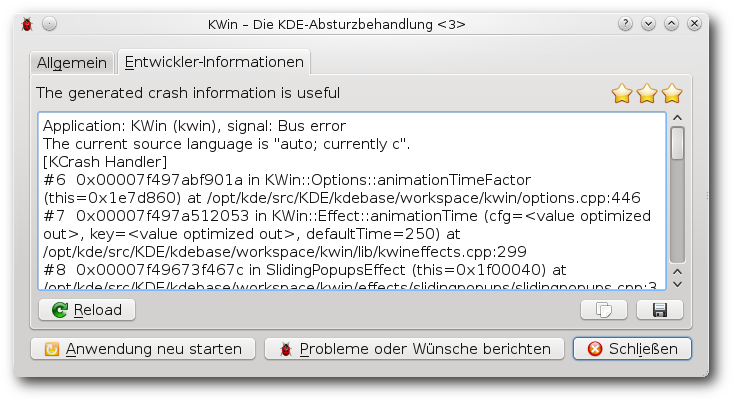

freiesMagazin Juni 2010 (ISSN 1867-7991)
Topthemen dieser Ausgabe
Ubuntu 10.04
Am 30. April 2010 wurde Ubuntu 10.04 freigegeben. Dieser Artikel soll einen Überblick über die Neuerungen der Distribution geben, wobei ein besonderer Augenmerk auf den Desktop gelegt wird. (weiterlesen)
Welches Betriebssystem ist das richtige für Netbooks?
Wer eins hat, liebt es. Wer keins hat, vermisst es auch nicht. Sie sind ständige Wegbegleiter bei Leuten, die dem Internet verfallen sind und überall dort, wo das Handy oft nicht mitkommt (Java, Flash, YouTube etc.). Man kann im Café sitzen, auf Facebook mal eben seinen Status ändern, bei Amazon vorbeischauen, um das neue Buch vom Lieblingsautor vorzubestellen, und ganz nebenbei noch schnell seine E-Mails prüfen. Die Rede ist von den kleinen Brüdern und Schwestern der Notebooks, den Netbooks. Wenn man nun ein Linux-Betriebssystem nutzen möchte, welches ist geeignet? (weiterlesen)
CouchDB – Datenbank mal anders
Wenn von einer Datenbank gesprochen wird, denkt man normalerweise als Erstes an relationale, SQL-basierte Datenbanken wie Oracle, MySQL, PostgreSQL oder SQLite. Aber es gibt auch einen völlig anderen Ansatz: die dokumentenorientierte Datenbank CouchDB. Der Name der Datenbank steht in erster Linie nicht für das besonders bequeme Arbeiten, sondern ist ein Akronym für „Cluster of unreliable commodity hardware Data Base“. (weiterlesen)
Zum Index
Inhalt
Linux allgemein
Ubuntu 10.04
Das Grmlmonster und seine Zähne
Haiku – Eine Alternative für den Desktop
Welches Betriebssystem ist das richtige für Netbooks?
Käferalarm! – Was tun bei Bugs?
Der Mai im Kernelrückblick
Anleitungen
Kurztipp: Verschlüsselt installieren
Kurztipp: Unicode-Zeichen in LaTeX nutzen
Software
CouchDB – Datenbank mal anders
Community
Projektvorstellung: einfachJabber.de
Rezension: Typo 3 – Das Praxishandbuch für Entwickler
Magazin
Editorial
Leserbriefe
Veranstaltungen
Konventionen
Impressum
Zum Index
Editorial
Chefredakteur gesucht! Liebe Leser, nicht dass Sie denken, freiesMagazin sucht einen neuen Chefredakteur! Nein, nein – so wie es aussieht, ist Dominik Wagenführ, seines Zeichens Chef, Chefredakteur und „Master of Deesaster“ von freiesMagazin, plötzlich verschwunden. Dies hatte zur Folge, dass wir die aktuelle Ausgabe von freiesMagazin nur mit einigen Anstrengungen auf den Weg bringen konnten. Daher unsere Frage: Haben Sie ihn gesehen - auf Linuxtagen oder anderen Open-Source-Veranstaltungen in Ihrer Umgebung? Wie unsere Recherchen ergeben, ist er unlängst in der Schweiz wieder aufgetaucht. Wissen Sie mehr? Sachdienliche Hinweise nimmt die Redaktion gerne auf – auch ohne Kopf ;).Gewohnheit und Ergonomie
Nach Erscheinen unserer letzten Ausgabe im Mai 2010 zog der Artikel „Neo – Ein ergonomisches Tastaturlayout“ [1] eine ganze Reihe von Kommentarbeiträgen [2] auf freiesmagazin.de nach sich – so auch in Ikhaya [3] bei ubuntuusers.de. Offensichtlich traf das Thema des Artikels das Interesse unserer Leser. Kein Wunder: behandelte der Artikel doch nichts weniger als eines der wichtigsten Eingabegeräte - „die Tastatur“ - und die Mühen, die einem ein Qwertz-Layout gerade während des Tippens von Sonderzeichen abverlangt. Gewohnte Mühen, sollte man hinzufügen, die einem fast gar nicht mehr auffallen. Immerhin konnte Frank Stähr mit Neo über einen sehr interessanten Lösungsansatz berichten. Vielen Dank an dieser Stelle für Ihre Kommentare!Weniger Leserbriefe
Unser Leser Erik Pfannenstein fragte in den Kommentaren [4] zur Ausgabe 05/2010, wo denn die Leserbriefe geblieben sind. Unsere kurze Antwort lief darauf hinaus, dass es schlichtweg keine oder kaum Leserbriefe gab. Damit ist auch schon eine Veränderung in freiesMagazin angesprochen: In Zukunft wollen wir keine Leserbriefe mehr in der regulären freiesMagazin-Ausgabe „abdrucken” - die Ausnahme sollen dabei Leserbriefe sein, von denen wir annehmen, dass sie von allgemeinem Interesse und Wichtigkeit sind. Natürlich bedeutet das nicht, dass Sie weniger Leserbriefe schreiben sollen, noch wollen wir Ihnen etwas vorenthalten. Uns ist nur der Gedanke gekommen, dass Ihre Reaktionen auf Artikel in freiesMagazin am besten über die Kommentarfunktion unter jedem Artikel geschrieben werden könnten. Damit wären zwei Vorteile verbunden: Zum einen hat der geneigte Leser so den Überblick über alle Leserbeiträge zu einem Thema, zum anderen spiegelt die Kommentarfunktion auch den gesamten Diskussionsverlauf wider. Beides konnte unser bisheriges Vorgehen nicht abbilden, da man den Diskussionsverlauf im Magazin über die Leserbriefe nur schlecht wiedergeben kann. Nun die Frage an Sie, liebe Leser: Wie ist Ihre Meinung dazu? Anregungen und Tipps sowie Kritik und Bedenken können wieder direkt anDistributionen
Was erwartet Sie in der Juniausgabe von freiesMagazin? Um es kurz zu fassen und mit einem Satz: Inhaltlich haben wir dieses Mal den Schwerpunkt auf das Thema „Distributionen“ gelegt. Vier Artikel widmen sich dem Thema: Hans-Joachim Baaders Artikel bringt einen Draufblick auf das unlängst erschienene Ubuntu 10.04 „Lucid Lynx“ samt seinen Neuerungen. Kirsten Roschanksi beschreibt mit ihrem Artikelbeitrag verschiedene Möglichkeiten, ein Netbook mit passenden Linux-Distributionen zu betreiben. Einen weiteren Artikel liefert Joachim Seemer, in dem er über „Haiku”, den Open-Source-Nachbau des vergangenen „BeOS“, Auskunft gibt. Schließlich berichtet Roman Hanhart in seinem Artikel über die aktuelle Version „Grmlmonster“ der bekannten Rettungsdistribution „grml“, vor der man natürlich - trotz Konsole und anderen Monstern - keine Bange haben muss.Spieleausgabe in spe
Was wäre das Leben ohne Linux und ohne Spiel - es wäre um eine ganze Nuance ärmer. Nun sind im freiesMagazin-Team einige Mitarbeiter ein bisschen der Spielerei unter Linux erlegen. Daher - aber nicht nur deswegen - haben sich in den letzten Jahren auch einige Artikel zum Thema „Linux und Spiele“ angesammelt. Wobei das Thema in freiesMagazin doch eigentlich eher zu kurz gekommen ist, wie wir finden. Deshalb ist uns nun - rückblickend auf die besagten Artikel - der Gedanke gekommen, eine Sammelausgabe dieser Artikel im Laufe der kommenden Sommermonate zu veröffentlichen. Aber wir wollen nicht nur Altes neu veröffentlichen, sondern zusätzlich sollen in dieser Ausgabe drei neue Artikel erscheinen. Vielleicht haben Sie ja auch Interesse, selbst den einen oder anderen Artikel zu schreiben und so zum Thema der Spieleausgabe beizusteuern, beispielsweise zu Ihrem Lieblingsspiel unter Linux - solange es nicht Linux selbst ist ;). Darüber würden wir uns sehr freuen.Layouter gesucht!
Liebe Leser, das freiesMagazin-Team hat alle Hände zu tun, um die Ausgaben von freiesMagazin zu veröffentlichen. Daher suchen wir nach Personen, die Interesse haben, am Layout des Magazins mitzuwirken. Sowohl für den Satz als auch für das Layout wird das Textsatzsystem LaTeX benutzt, die Grundlagen dazu sollten Sie also beherrschen. Für alles weitere gilt: Keine Panik! Unterstützung und Hilfe unsererseits soll für Sie selbstverständlich sein. Daneben wäre Wissen im Umgang mit dem Versionskontrollsystem Subversion (SVN) gut. Das ist aber nicht zwingend erforderlich, da die wenigen benötigten SVN-Befehle schnell gelernt sind. Und was gibt es zu verdienen? Nun, freiesMagazin speist sich aus dem freiwilligen Einsatz seiner Mitarbeiter - heißt: die Tätigkeit ist ehrenamlich. Zu verdienen gibt es Ruhm und Ehr' und die Freude, an einem großen Community-Projekt teilzuhaben und auf diesem Wege der Gemeinschaft etwas zurückzugeben. Wenn Sie also Interesse, Lust und Zeit haben, schreiben Sie an[1] http://www.freiesmagazin.de/freiesMagazin-2010-05
[2] http://www.freiesmagazin.de/20100502-maiausgabe-erschienen#comment-765
[3] http://ikhaya.ubuntuusers.de/2010/05/02/freiesmagazin-05-2010-erschienen/
[4] http://www.freiesmagazin.de/20100502-maiausgabe-erschienen#comment-781
Das Editorial kommentieren
Zum Index
Ubuntu 10.04
von Hans-Joachim Baader Am 30. April 2010 wurde Ubuntu 10.04 freigegeben. Dieser Artikel soll einen Überblick über die Neuerungen der Distribution geben, wobei ein besonderer Augenmerk auf den Desktop gelegt wird. Redaktioneller Hinweis: Der Artikel „Ubuntu 10.04“ erschien erstmals bei Pro-Linux [1] unter der GNU Free Documentation License [2].Vorwort
Ubuntu 10.04 LTS [3] ist eine Version mit verlängertem Support, fünf Jahre für Server und drei Jahre für das Desktopsystem, und damit der Nachfolger von 8.04 LTS. Ein Update ohne Neuinstallation von den Versionen 9.10 und 8.04 LTS wird offiziell unterstützt. Ubuntu erscheint in mehreren Varianten, deren Hauptunterschied in den Installationsmedien und dem vorinstallierten Softwareumfang liegt. Die Desktop-Version und die Netbook-Edition sollen im Vergleich zu früheren Versionen deutlich schneller starten, was unter anderem durch die Entfernung von HAL aus dem Startvorgang möglich wurde. Die Server-Edition enthält eine bessere „Ubuntu Enterprise Cloud“ und ermöglicht die Einrichtung als Cloud-Server bei der Installation. Ein solcher Server kann in EC2 von Amazon zum Einsatz gebracht werden oder auch in einer privaten Unternehmens-Cloud laufen. Neben der erweiterten Cloud-Funktionalität bringt die Server-Edition auch AppArmor-Profile für zahlreiche Dienste, einen gehärteten Kernel, der Angriffe erschweren soll, und eine einfach einzurichtende Firewall. Die weiteren offiziell unterstützten Varianten sind Kubuntu, Xubuntu, Edubuntu, Ubuntu Studio und Mythbuntu. Dieser Artikel wird sich allerdings auf Ubuntu und Kubuntu beschränken. Es ist bekannt, dass Ubuntu mit dem GNOME-Desktop für Canonical das primäre System darstellt. Neuerungen, wie auch das neue Design dieser Version, erscheinen immer zuerst dort und werden erst später an KDE angepasst. Dennoch ist auch Kubuntu 10.04 eine LTS-Version, die erste mit KDE 4, nachdem Version 8.04 den Umstieg von KDE 3 auf KDE 4 wagte und daher nicht als LTS-Version deklariert wurde (siehe „Ubuntu 8.04 LTS – Ubuntu für drei Jahre“, freiesMagazin 08/2008 [4]). Die spannendsten Neuerungen sind oft die, die nicht in den Ankündigungen zu finden sind, sondern sich erst beim Durcharbeiten der offiziellen Release Notes [5] und beim Arbeiten mit dem System und dem Vergleich mit dem Vorgänger zeigen.Installation
Ubuntu kann auf verschiedene Arten installiert werden: Von einem Live-System aus, das als CD und umfangreichere DVD verfügbar ist, durch direktes Hochfahren eines Installationsprogramms (CD oder DVD) oder durch eine Installation von der Alternate-CD, die im Textmodus läuft, aber wesentlich mehr Flexibilität besitzt. Für Ubuntu 10.04 werden nach wie vor 256 MB RAM auf dem Desktop (GNOME, KDE) als Mindestanforderung angegeben. Subjektiv läuft das System mit 512 MB und mehr aber wesentlich besser. Besonders unter KDE wird das Arbeiten mit nur 256 MB RAM fast unerträglich. Xubuntu und die Server-Edition sollten weiterhin mit 128 MB auskommen. Für die Live-CDs sind ebenfalls mindestens 256 MB erforderlich; die frühere Anforderung von 512 MB wurde also reduziert. Aber auch hier ist ein System mit 256 MB sehr langsam. Die Live-CD legt einen Swap-Bereich mit der halben Größe des RAMs im RAM an, der jetzt allerdings komprimiert ist. Das dazu verwendete Gerät heißt /dev/ramzswap und ist kein Standard-Feature des Linux-Kernels, sondern stammt von dem Projekt CompCache [6]. Es ist in Linux 2.6.33 teilweise integriert und soll in Linux 2.6.34 vollständig enthalten sein, was aber noch nicht sicher ist. Wieviel der Swap zusätzlich zum Speicherbedarf beiträgt, ist dadurch schwer zu sehen. Ist es tatsächlich die Hälfte des RAMs oder nur so viel, wie nach der Kompression noch benötigt wird? Ubuntu steht wie in den Vorversionen als Installations-CD in den Varianten Desktop, Alternate und Server zur Verfügung, wobei hier nur die Installation von der Desktop-CD kurz vorstellt wird. Zu empfehlen ist allerdings die textbasierte Installation von der Alternate-CD, da in der Desktop-Variante nach wie vor die Möglichkeit fehlt, den Logical Volume Manager (LVM) zu verwenden. Die Alternate-Installation läuft fast genauso ab wie bei der grafischen Installation. Durch Boot-Optionen steht aber eine erweiterte Installation zur Verfügung, mit der man weitgehende Kontrolle über den ganzen Vorgang hat. Die Desktop-CD lässt sich auch als Live-System nutzen. Anders als in früheren Versionen erscheint nicht automatisch der Desktop, sondern das System startet zunächst den Installer. Auf dessen ersten Seite hat man die Option, den Installer zu beenden und das Live-System zu starten. Das Live-System entspricht weitgehend dem System, das vom Installationsprogramm auf der Platte installiert wird. Man hat aber auch hier noch die Option, das grafische Installationsprogramm zu starten, das als Icon auf dem Desktop erscheint, auf dem sich bis auf einen Ordner mit Beispielen sonst nichts befindet. Gleichgültig ob man von der Desktop-CD startet oder das installierte System bootet: Die Startzeit wurde auf geradezu spektakuläre Weise verkürzt. War die Vorgängerversion noch etwa gleich schnell wie Version 9.04, so startet Version 10.04 etwa dreimal so schnell vom Bootmanager bis zum grafischen Login-Prompt. Abhängig von der Hardware sind jetzt Zeiten von etwa zehn Sekunden möglich. Die grafische Installation läuft in sechs Schritten ab. Bei manueller Partitionierung sind es sieben, und wenn eine Windows-Partition gefunden wurde, von der man Daten ins neue System migrieren kann, kommt ein weiterer Schritt hinzu. Die Installation hat sich nicht nennenswert verändert. Sie beginnt weiterhin mit der Sprachauswahl, bei der mehr als 60 Sprachen zur Verfügung stehen. Im zweiten Schritt erfolgt die Auswahl der Zeitzone, im dritten die Eingabe des gewünschten Tastaturlayouts.Der Partitionierer der Live-CD beherrscht immer noch kein LVM.
Der vierte Schritt ist die Partitionierung, die Ubuntu vollautomatisch übernehmen kann. Optionen wie LVM, Verschlüsselung der gesamten Festplatte oder RAID stehen hier, wie schon angedeutet, nach wie vor nicht zur Verfügung. Die in der Vorversion eingeführte Verschlüsselung des Home-Verzeichnisses des Benutzers mit eCryptFS wurde entfernt. Der Grund dafür könnte sein, dass man es nach der Installation der ecryptfs-utils auch nachträglich mit dem gleichnamigen Paket einrichten kann [7] und somit Platz auf der Installations-CD gespart wurde. Die Option, eCryptFS im Installer anzubieten, war ohnehin nicht sehr konsequent. Als Dateisystem ist ext4 voreingestellt. Alternativ stehen ext3, ext2 und alle anderen Journaling-Dateisysteme zur Verfügung. ext4 ist in den meisten Fällen eine Verbesserung gegenüber ext3, sowohl in der Geschwindigkeit als auch in der Pflege. Ubuntu warnt jedoch, dass die Geschwindigkeit in manchen Fällen schlechter ist als bei ext3. Die Geschwindigkeit des Paketmanagers dpkg soll wegen vieler zusätzlich nötiger fsync-Operationen um bis zu 50 Prozent schlechter sein. Im Zweifelsfall sollten Benutzer mit spezifischen Anforderungen die Geschwindigkeit vorab testen. Software-RAIDS, sogenannte Fake-RAIDS, werden nun automatisch aktiviert und bei der Installation als Laufwerk anstelle der einzelnen Laufwerke angeboten. Man kann dieses Verhalten bei Bedarf mit einer Bootoption abstellen. Eine weitere Änderung ist, dass Partitionen nun nicht mehr an der längst bedeutungslos gewordenen Zylindergrenze ausgerichtet werden, sondern an Megabyte-Grenzen. Statt bei Sektor 63 beginnt also die erste Partition bei Sektor 2048, ein Sektor steht weiterhin für 512 Bytes. Der Grund für die Änderung ist, dass Festplatten intern mittlerweile mit größeren Sektoren arbeiten, beispielsweise 4096 Bytes. Fordert nun das Dateisystem einen Block von 1024 oder 4096 Bytes an, so führt das bei ungeschickter Ausrichtung der Partition oft dazu, dass die Festplatte zwei 4096-Byte-Blöcke lesen und das Ergebnis daraus zusammensetzen muss. Beim Schreiben ergibt sich der gleiche Overhead. Die Ausrichtung an Megabyte-Grenzen führt daher bei neueren Festplatten zu deutlich höheren Geschwindigkeiten. Im fünften Schritt gibt man seinen Namen, Anmeldenamen, Passwort und den Computernamen ein. Wenn zuvor bereits per DHCP ein Name ermittelt werden konnte, wird dieser als Vorgabe angezeigt. Der letzte Schritt bringt eine Übersicht über die eingegebenen Daten. Wenn man diese bestätigt, wird das System installiert, wobei der Bootmanager GRUB2 verwendet wird. Das Verhalten bei der Installation des Bootmanagers und andere Dinge kann man einstellen, indem man auf dem letzten Bildschirm den Button „Erweitert“ betätigt. Falls man ein Upgrade eines bestehenden Systems durchführt, wird auch der Kernel ersetzt, wie man es von Ubuntu bereits kennt. Der alte Kernel bleibt über eine Auswahlmöglichkeit im Bootmanager erhalten.
Installation des Grundsystems.
Laufender Betrieb
Im Folgenden sollen die beiden umfassendsten Desktop-Umgebungen, GNOME und KDE, zusammen betrachtet werden. Einige bedeutsame Änderungen vorweg: Ubuntu 10.04 LTS verwendet einen Linux-Kernel auf Basis von Version 2.6.32.11. Benutzer, die sich an MS Active Directory anmelden wollen, können das Paket likewise-open nutzen, das auf Version 5.4 aktualisiert wurde. Der freie Grafiktreiber Nouveau ist für NVIDIA-Hardware nun voreingestellt. Im Gegensatz zum proprietären Treiber beherrscht Nouveau zwar noch keine 3-D-Beschleunigung, unterliegt dafür aber keinen Einschränkungen bei der Weitergabe. Das Ubuntu-Team rechnet mit einer schnellen Weiterentwicklung und Fehlerkorrektur. Bedingt durch den neuen Kernel wird das Kernel Mode Setting besser unterstützt als bisher und wird immer aktiviert, wenn möglich.GNOME mit mehreren Anwendungen.
Ubuntu 10.04 hat unter GNOME sein Aussehen radikal verändert. Das Theme „Human“ ist nicht mehr dabei. An seine Stelle treten, wie knapp zwei Monate vor der Veröffentlichung bekannt wurde [8], zwei neue Themes, die zunächst als „Dark“ und „Light“ bezeichnet wurden. In der Theme-Verwaltung heißen sie nun „Ambiance“ und „Radiance“, wobei das dunklere Ambiance die Standardeinstellung ist. Der standardmäßig eingestellte Desktophintergrund dieses Themes weist einen Farbverlauf dunkelviolett bis hellviolett auf. Im Standardlieferumfang stehen allerdings ein paar recht nette Alternativen zum Hintergrund und andere Themes zur Verfügung. Weitere Themes und erst recht Hintergrundbilder findet man aber im Web zur Genüge. Die neuen Themes ändern zugleich auch die Anordnung der Fensterbuttons zum Schließen, Minimieren und Maximieren des Fensters. Während sie bei den meisten Desktops rechts zu finden sind, sind sie hier links, und der Button für das Fenstermenü ist verschwunden. Das Fenstermenü ist aber immer noch mit der rechten Maustaste auf der Titelleiste erreichbar. Der Grund für die Verschiebung der Buttons ist, dass auf der rechten Seite Platz für innovative Elemente geschaffen werden sollte. Erste Ideen, wie dieser Platz genutzt werden könnte, kursieren bereits [9]. Wenn man nicht nur mit Ubuntu, sondern auch mit anderen Systemen arbeitet, kann es schwer sein, sich an die geänderte Anordnung zu gewöhnen. Überhaupt sind Themes und die Buttonanordnung Geschmackssache. Wer die geänderten Buttons loswerden will, kann z. B. als Theme das altbekannte Clearlooks wählen, bei dem die Fensterbuttons auf der rechten Seite verblieben sind. Dann muss man nur noch einen schöneren Bildschirmhintergrund finden, und schon ist man wieder im Geschäft. KDE blieb bei der Farbe Blau. Auch das KDE-Standard-Theme „Air“ blieb erhalten. Über KNewStuff lassen sich komfortabel alternative Themes, Hintergrundbilder und mehr suchen. Der Lieferumfang wurde aber deutlich reduziert, sodass man ohne Internetzugang kaum eine Alternative hat. KNewStuff ist insgesamt komfortabler als das Äquivalent in GNOME, wo man direkt oder indirekt über den Webbrowser gehen muss.
KDE mit mehreren Anwendungen.
Wie gewohnt hat Root keinen direkten Zugang zum System. Zugang zum Root-Account ist aber über das Kommando sudo vorhanden. Damit kann man jeden beliebigen Befehl ausführen, nachdem man sein eigenes Passwort eingegeben hat. Wenn man, nachdem man als Root eingeloggt ist, ein Passwort vergibt, ist auch der direkte Root-Login möglich. Der GNOME-Desktop benötigt mit einem Terminalfenster ohne weitere offene Programme etwa 320 MB; das sind in etwa 120 MB mehr als in der Vorversion. KDE benötigt etwa 258 MB etwa gleich viel wie in der Vorversion. Dennoch ist KDE subjektiv träger als GNOME. Anwendungen benötigen generell etwas länger zum Starten, unabhängig von ihrer Größe. Ohne genaue Zeiten nennen zu können, startete selbst OpenOffice.org unter GNOME schneller als unter KDE auf demselben System. Die Trägheit von KDE ist allerdings wohl nicht Ubuntu anzulasten, denn auch andere Distribution mit KDE4 verhalten sich ähnlich. So verwundert es nicht unbedingt, dass trotz zahlreicher schöner Features von KDE4 sich immer noch viele Anwender an KDE3 klammern oder es sich zurückwünschen. Die neue Version 2.30.0 von GNOME bringt den Benutzern, abgesehen vom Theme, weitgehend das gewohnte Erscheinungsbild ohne böse Überraschungen. Der Standardbrowser ist nicht Epiphany, sondern Firefox 3.6.3. Als Office-Suite ist OpenOffice.org 3.2.0 installiert. Neben den wichtigsten GNOME-Anwendungen sind noch einige wenige weitere wichtige Anwendungen vorinstalliert. Viel mehr war durch den begrenzten Platz auf der Installations-CD nicht möglich. Dem begrenzten Platz fiel auch GIMP zum Opfer. Für die von den meisten Benutzern benötigte einfache Bearbeitung von Kamerabildern genügt F-Spot und für alle anders gelagerten Ansprüche kann man GIMP oder ein anderes Programm nachinstallieren. Neu sind Simple Scan, eine einfache Oberfläche zum Bedienen von Scannern, der Video-Editor Pitivi sowie Gwibber für das Senden und Empfangen von Nachrichten in sozialen Netzen. Nicht ganz neu, aber erstmals standardmäßig integriert, ist der Cloud-Dienst „Ubuntu One”. Durch das permanent aktive Ubuntu One steigt leider auch der Speicherbedarf.
Online-Dienste und Multimedia
Da Ubuntu One noch ziemlich neu ist, sind im Vergleich zur letzten Version viele Änderungen festzustellen. Es ist nicht mehr über den Menüpunkt „Orte“ im GNOME-Menü erreichbar, sondern besitzt einen Eintrag im „MeMenu“ rechts. Zum Anmelden an Ubuntu One kann man einen Launchpad-Account nutzen, wenn man einen besitzt. Wenn nicht, kann man recht einfach einen neuen anlegen, ohne über Launchpad gehen zu müssen. Neue Features in Ubuntu One sind eine einfacherere Synchronisation von Dateien und Kontaktdaten zwischen verschiedenen Rechnern und die Synchronisation mit Mobiltelefonen. Letztere ist derzeit noch im Betatest und wird später wohl nur gegen Bezahlung erhältlich sein. Auch das Publizieren von Dateien, um diese mit ausgewählten Benutzern gemeinsam nutzen zu können, wurde vereinfacht. Es können automatisch Kurz-URLs erzeugt werden, wofür auf bekannte Dienste (standardmäßig is.gd) zurückgegriffen wird. Ein neues Konfigurationsprogramm „Ubuntu One Einstellungen“ ermöglicht die rasche Einrichtung von Konten und das Setzen von Optionen.Ubuntu One.
Nach dem Hin und Her über die Suchmaschine [10] ist nun doch weiterhin Google die Standardsuchmaschine im Webbrowser Firefox. Auch die Startseite von Firefox enthält ein Suchfeld von Google. Nebenbei nennt sich der Browser jetzt „Mozilla Firefox für Ubuntu – canonical 1.0“. Firefox enthält die vorinstallierte Erweiterung Ubuntu Firefox Modifications jetzt in Version 0.9. Darin ist der bereits bekannte Plug-in-Finder-Service enthalten. Will man beispielsweise ein Flash-Element in einer Webseite abspielen, lassen sich komfortabel passende Plug-ins finden und installieren. Allerdings funktionierte es gerade mit Flash in dieser Version nicht, während es in Version 9.10 noch einwandfrei klappte. Der Plug-in-Finder wurde zwar aktiv, konnte aber kein Plug-in vorschlagen. Möglicherweise lag es daran, dass das Testsystem 64-bittig war und das Adobe-Flash-Plug-in bekanntlich noch nicht in einer offiziellen 64-Bit-Version vorliegt. Gnash 0.8.7 hingegen ist für 64 Bit verfügbar. Es funktioniert zwar mit Flash-Werbebannern, kommt jedoch offenbar mit der Kodierung des Tages auf Videoseiten wie YouTube nicht klar und wurde eventuell deshalb nicht in die Auswahl aufgenommen.
Startseite in Firefox.
Auch in den bekannten Anwendungen Rhythmbox und Totem ließen sich GStreamer-Plug-ins, die die standardmäßig nicht unterstützbaren Formate kennen, wie gewohnt problemlos installieren. Fast jedes Audio- und Video-Format ließ sich damit abspielen. Neu im Audioplayer Rhythmbox ist der „Ubuntu One Music Store“, der zwar nur einer von mehreren ist, aber sich gleich beim ersten Start zeigt. Danach hält er sich jedoch wie die anderen Läden dezent im Hintergrund. Mit dem Ubuntu One Music Store hat Ubuntu nun aber erstmals einen Partner, der nicht nur für eine kleine Gruppe von Spezialisten interessant ist, denn sein Angebot entstammt 7digital, einem der größten Online-Musikanbieter. In Verbindung mit der Möglichkeit, Musik von dem Music Store direkt nach Ubuntu One zu kopieren und sie von dort aus auf alle seine Rechner zu synchronisieren, könnte das Angebot einige Nutzer ansprechen, weil es recht komfortabel ist.
KDE
KDE liegt nun in Version 4.4.2 vor. Kubuntu 10.04 LTS [11] wird die erste LTS-Version von Kubuntu mit KDE4. Gegenüber dem Standard-Umfang von KDE SC 4.4.2 bringt Kubuntu eine grafische Touchpad-Konfiguration, eine Integration von Firefox, Verbesserungen im Benachrichtigungssystem und eine Standardisierung der Menü-Systemleiste zwischen den Desktopsystemen. Unter KDE wird der Benutzer mit dem Benachrichtigungssystem durch die Paketverwaltung gleich beim ersten Login darauf aufmerksam gemacht, dass zusätzliche Codecs die Multimedia-Tauglichkeit erhöhen würden. Das Angebot, diese herunterzuladen und zu installieren, sollte man gleich wahrnehmen. Danach funktionieren proprietäre Audio- und Videoformate sowie Flash ohne weiteres Zutun. Als Standard-Browser ist Konqueror eingerichtet. Als Office-Suite ist auch unter KDE OpenOffice.org 3.2.0 installiert. KOffice lässt sich in Version 2.1.2 nachinstallieren. Die KDE3-Bibliotheken sind in den Archiven vorhanden, denn es gibt nach wie vor zahlreiche Pakete, die sie noch benötigen. Sie sind aber nicht in der Standardinstallation. Das CD-Brennprogramm K3b liegt in der an KDE4 angepassten, aber noch im Test befindlichen Version 1.91 vor. Es ist kein Bildbearbeitungsprogramm vorinstalliert, wohl aus den gleichen Gründen wie unter GNOME. Für Digitalfotos ist das KDE-Modul „Kamera“ zuständig, Digikam passte wohl nicht mehr auf die CD.MeMenu, Indikatoren und Benachrichtigungssystem
In Ubuntu 10.04 wurden die Icons im rechten Teil des oberen Panels, die Benachrichtigungen anzeigen sollen, zu Menüs umgebaut. Dies ist die erste Stufe der für später geplanten Indikator-Menüs [12]. Da es notwendig war, dass das Panel weiterhin herkömmliche Applets aufnehmen kann, wurden die Indikatoren in ein „notification-area-applet“ eingebettet. Einer der Vorteile der Indikator-Menüs soll sein, dass sich mehrere Applets mit ähnlichen Aufgaben ein Icon teilen können. Die Bedienung erfolgt mit einem normalen Mausklick, ein Rechtsklick ist nicht mehr erforderlich. Eine Besonderheit ist das unter dem Benutzernamen befindliche „MeMenu“ [13], das Möglichkeiten zur Interaktion mit Online-Diensten wie Twitter, identi.ca und Facebook, Einrichtung von Chat- und E-Mail-Konten und Ubuntu One zusammenfasst. Unter KDE wird knotify4 verwendet, das einen anderen Mechanismus nutzt. Es lieferte nur einen einzigen Grund zur Beanstandung und lief sonst tadellos. Es speichert mittlerweile auch die letzten Nachrichten, die man sich so (für die Dauer der Sitzung) noch einmal zurückholen kann. Manchmal sind jedoch die Meldungen zu lang und werden dann nur teilweise dargestellt. Es wurde leider keine Möglichkeit gefunden, sie vollständig sichtbar zu machen.Paketverwaltung und Updates
Das Hauptprogramm zur Paketverwaltung ist das in der letzten Version eingeführte Software-Center, das es weiterhin nur unter GNOME gibt. Es ist in der Art eines Anwendungsstores aufgebaut, verwaltet aber auch die bereits installierten Anwendungen. In der Kategorie-Ansicht gibt es nun auch Unterkategorien. Die für diesen Bereich verfügbare Software wird dann als Liste angezeigt. Mit der Suche kann man die Auswahl weiter einschränken. Klickt man ein Softwarepaket in der Liste an, erhält man Buttons zum Installieren (bei installierten Paketen einen zum Entfernen) und einen Link zum Aufrufen der Webseite. Ferner werden eine Beschreibung, ein Screenshot und weitere Informationen angezeigt. Das Software-Center enthält allerdings keine Funktionen für die Verwaltung der Paketquellen und für Paketupdates. So besitzt man unter GNOME momentan drei Anwendungen, die sich mit der Paketverwaltung befassen. Es wäre eine Überlegung wert, ob man nicht die fehlenden Funktionen ins Software-Center integriert und damit den gleichen Funktionsumfang wie Synaptic erreicht.Auswahl von Anbietern im Software-Center.
Außerdem kann man nun im Software-Center zwischen Software, die von Ubuntu und anderen Anbietern stammt, voneinander unterscheiden. Dies geschieht über zwei separate Zweige im Baum „Software installieren“. Es ist keine sehr geschickte Lösung, weil bei der Wahl von „Bereitgestellt von Ubuntu“ eine Liste von über 30.000 Paketen erstellt wird – glücklicherweise dauert es nur wenige Sekunden. Die offiziellen Repositorys von Ubuntu 10.04 sind weiterhin main, universe, multiverse und restricted. Letzteres ist das Archiv, in dem sich unterstützte, aber unfreie Pakete befinden. Darunter befinden sich die Grafikkartentreiber von NVIDIA und anderen, Firmwarepakete und Treiber, die nicht unter vollständig freien Lizenzen stehen. Sie können von Ubuntu grundsätzlich nicht so wie die anderen Pakete unterstützt werden, da der Quellcode teilweise nicht zugänglich ist. Im Gegensatz zu main wird Software, die im Repository universe zu finden ist, nicht offiziell unterstützt. Die Softwarepakete in universe sind frei, während jene in multiverse unfrei sind. Daneben existiert noch das Repository partner, das kostenlos erhältliche Software von Partnerunternehmen beherbergt. Unter KDE wird weiterhin KPackageKit zum Verwalten und Aktualisieren von Software verwendet. Im Gegensatz zum Software-Center ist es eine umfassende Lösung wie Synaptic und wurde gegenüber früher verbessert. Leider lassen sich in der Suche nach Softwarepaketen keine Wildcards verwenden. Die Auswahl der Funktionen „Softwareverwaltung“, „Softwareaktualisierungen“ und „Einstellungen“ hätte leicht in einem Menü erfolgen können, anstatt so viel Platz auf dem Bildschirm zu verschwenden. Außerdem hinterlässt die Kombination von Suchbegriffen, Filtern und Bereichsauswahl, wie sie im Hauptfenster präsentiert wird, keinen logischen Eindruck und sie erscheint auch nicht intuitiv, die Oberfläche wirkt wie ein Prototyp .
KPackageKit.
Fazit
Ubuntu 10.04 LTS wirkt trotz aller Änderungen sehr vertraut. Natürlich gibt es sowohl einige Änderungen in den Äußerlichkeiten als auch viele Verbesserungen in den Details. Einige Wünsche bleiben weiterhin offen, und so manches Programm und manche Komponente könnte noch intuitiver werden. Unterm Strich gilt jedoch für Ubuntu wie für die meisten freien Programme: Die neueste Version ist meist die beste. Auch wenn im Test keine ernsthaften Fehler zu bemerken waren, heißt es sicher nicht, dass Ubuntu 10.04 frei von Fehlern wäre. Der Preis, den man für große Aktualität zahlen muss, ist, dass es anfänglich so einige Fehler geben kann. So ist auch bei Ubuntu 10.04 mit zahlreichen Paketupdates zu rechnen. Alle Anwender, die nicht die Zeit oder die Fähigkeit haben, sich mit Fehlern auseinanderzusetzen, sollten wie immer einige Wochen warten, bevor sie auf Ubuntu 10.04 aktualisieren. Insgesamt ist Ubuntu 10.04 LTS eine der empfehlenswertesten Linux-Distributionen. Ihre hohe Benutzerfreundlichkeit macht sie für Einsteiger geeignet, und wo Einsteiger ohne Probleme klarkommen, gilt das für die Experten erst recht. Selbst wenn so manche Nachricht zunächst etwas anderes befürchten ließ, ist Canonical mit Ubuntu 10.04 ein exzellenter Start in den neuen LTS-Zyklus gelungen. Links[1] http://www.pro-linux.de/artikel/2/1190/ubuntu-1004.html
[2] http://www.gnu.org/copyleft/fdl.html
[3] http://www.ubuntu.com/news/ubuntu-10.04-desktop-edition
[4] http://www.freiesmagazin.de/freiesMagazin-2008-08
[5] http://www.ubuntu.com/getubuntu/releasenotes/1004
[6] http://code.google.com/p/compcache/
[7] http://wiki.ubuntuusers.de/ecryptfs-utils
[8] http://www.pro-linux.de/news/1/15380/ubuntu-erhaelt-neues-branding.html
[9] http://www.pro-linux.de/news/1/15479/neues-fensterelement-esfera-fuer-ubuntu-1010-vorgeschlagen.html
[10] http://www.pro-linux.de/news/1/15525/ubuntu-aendert-standard-suchmaschine-doch-nicht.html
[11] http://www.kubuntu.org/news/10.04-lts-release
[12] http://www.pro-linux.de/news/1/15584/ubuntu-plant-indikator-menues.html
[13] https://wiki.ubuntu.com/MeMenu
| Autoreninformation |
| Hans-Joachim Baader befasst sich seit 1993 mit Linux. 1994 schloss er sein Informatikstudium erfolgreich ab, machte die Softwareentwicklung zum Beruf und ist einer der Betreiber von Pro-Linux.de. |
Zum Index
Das Grmlmonster und seine Zähne
von Roman Hanhart Einer der wohl bekanntesten Rettungsanker nebst Knoppix [1] dürfte wahrscheinlich grml [2] sein. Die Debian-basierende Distribution, welche dereinst auf Knoppix aufsetzte, wurde just vor einigen Tagen in der neuen Version 2010.04 veröffentlicht. Am 22. Oktober 2004 erblickte grml offiziell das Licht der Bits und Bytes. Die erste Version mit der Nummer 0.1 hieß damals OS 04. grml gibt es als 32- und 64bit-Version, nebenher als Medium- oder Small-Edition mit mehr oder weniger Tools und Programmen auf dem Datenträger [3]. Da grml hauptsächlich als Rettungswerkzeug benutzt wird – und man bei der Installation auf die Festplatte gefragt wird, ob man wisse, was man tue – ist das Linux konsequenterweise als Live-CD erhältlich; das ISO-Image lässt sich natürlich auch auf einen USB-Stick „brennen“. Die aktuelle Version trägt den „Übernamen“ Grmlmonster. Die Liste der vorhandenen Applikation ist recht umfangreich [4]; hier bemerkt man die Vererbung von Debian. Übrigens hieß die Version 2008.11 „Schluchtenscheißer“. grml ist vor allem für System-Administratoren interessant und eher weniger geeignet, um damit am Rechner zu arbeiten. Das ginge wohl auch, aber die Entwickler [5], welche allesamt Familiennamen aus unseren Breitengraden tragen, setzen offenbar ganz bewusst auf die Fähigkeiten, ein defektes System zu retten. Außerdem sei das Linux für Benutzer geeignet, die gerne im Textmodus wirken. Beim Start vom grml wird zunächst die Hardware durchsucht und sehr oft sauber erkannt. Bereits mit auf der CD (Version Release grml64 2010.04 – Codename Grmlmonster) sind diverse Arbeitsumgebungen wie fluxbox, ion, twm, fvwm-crystal oder wmii vorhanden und können, sofern das Bootmedium die richtigen Konfigurationsdateien [6] enthält, direkt ab dem grml-Startbildschirm gestartet werden.grml beim Booten. Original (Lizenz: Public Domain)
Es existiert ein deutsches Handbuch zu grml, welches allerdings eher die Meta-Themen behandelt und weniger auf den Betrieb von grml eingeht [7]. Und natürlich bestehen weitere Dokumentationen zu diesem Rettungssystem, in denen in englischer Sprache die relevanten Informationen zum Betrieb von grml zu finden sind [8]. Außerdem ist ein Wiki (Doku-Wiki) verfügbar, in dem weitere, vertiefende Informationen, aber auch das Bug-Tracking zu finden sind [9].
Die grml Konsole. Original (Lizenz: Public Domain)
Eine weitere, besonders interessante Eigenschaft von grml ist die Verwendung von Zsh. Auf der Bücherliste [10] sind auch einige Fachbücher zu diesem Thema verlinkt. Die Z-Shell oder eben die Zsh ist eine Unix-Shell, die sowohl als interaktive Login-Shell, als auch als ein mächtiger Kommandozeileninterpreter für Shellskripte verwendet werden kann. Sie nutzt eine etwas gewöhnungsbedürftige Syntax, ist aber umso mächtiger. Dazu gibt es eine eigene Wiki-Seite [11]. Es gibt auch unter Ubuntu eine Möglichkeit, die Zsh zu nutzen (siehe „Die Z-Shell (zsh) – Eine mächtige Alternative zur Bash“, freiesMagazin 03/2010 [12]). Bei Bedarf lässt sich aber unter grml auch eine andere Shell nutzen, so zum Beispiel die Bash.
grml Fluxbox-Desktop. Original (Lizenz: Public Domain)
Ebenso spannend und eher etwas ungewöhnlich, dafür aber sehr praktisch, ist die Werkzeugkiste namens Cdrtools [13], die mitgeliefert wird. Damit lassen sich diverse Aufgaben rund um das Brennen von CDs und DVDs erledigen. grml ist wohl einer der wenigen Distributionen, die auf einer LiveCD das Tool führt. Das Logo der aktuellen Version bildet ein Monsterli ab, ein freundliches zwar, aber es besitzt ganz beachtliche Zähne. Und diese sind dann auch spürbar, wenn man es weniger gewohnt ist, mit der Z-Shell zu arbeiten. Ganz so einfach ist es nicht, obschon sich die Einarbeitungszeit lohnen dürfte, will man grml als Rettungsanker nutzen. grml ist sicherlich keine Linux-Distribution für Anfänger oder Liebhaber einer grafischen Arbeitsumgebung. Das will sie auch nicht sein, sondern konzentriert sich auf Rettungen und dient GUI-Allergikern als Spielweise oder Arbeitsinstrument. Mika Prokop schrieb im August 2009 einen recht interessanten und ergiebigen Beitrag zu grml auf der Linux Community [14]. Auf der Projekt-Website von grml sind weitere Medienberichte zu grml aufgelistet [15], es gibt auch einen eigenen Bereich für deutsche Artikel. grml lässt sich direkt von der Projekt-Website herunterladen [3]. Falls kein Breitband-Internet zur Verfügung steht, kann eine CD bei der Tuxpost [16] gegen drei Euro plus Versandkosten bestellt werden.
Das grml Vesamenü. Original (Lizenz: Public Domain)
Links
[1] http://www.knopper.net/knoppix/
[2] http://grml.org/
[3] http://grml.org/download/
[4] http://grml.org/files/release-2009.10/dpkg_get_selections
[5] http://grml.org/team/
[6] http://grml.org/grml-x/
[7] http://grml.org/docs/grml-paper.de.pdf
[8] http://grml.org/docs/
[9] http://wiki.grml.org/doku.php
[10] http://grml.org/books/
[11] http://zshwiki.org/
[12] http://www.freiesmagazin.de/freiesMagazin-2010-03
[13] http://cdrecord.berlios.de/private/cdrecord.html
[14] http://www.linux-community.de/Internal/Artikel/Print-Artikel/LinuxUser/2009/08/Chirurgisches-Besteck/
[15] http://grml.org/press/
[16] http://shop.tuxpost.de/index.php?manufacturers_id=66
| Autoreninformation |
| Roman Hanhart hat sich für seine Arbeit bei RadioTux grml angesehen und Gefallen daran gefunden. Daneben engagiert er sich seit gut fünf Jahren in der deutschen und eidgenössischen Community rund um das freie Linux Ubuntu. |
Zum Index
Haiku – Eine Alternative für den Desktop
von Joachim Seemer Haiku [1] ist der Name des freien Desktopbetriebssystems, das praktisch ein Open-Source-Nachbau des kommerziellen, doch leider gescheiterten, BeOS [2] darstellt. Die 1998 als BeOS R3 von der Firma Be Inc. auf den Markt gebrachte Software konnte sich trotz zu dieser Zeit zukunftsweisender Technologien wie 64-Bit-Dateisystem mit indizierten Metadaten, umfassender Multithreading- und Multiprozessor-Unterstützung, ausgefeiltem Messaging in einem leichtgewichtigen Client-Server-Modell u. v. m. nicht durchsetzen. Haiku soll die erfolgreichere Nachfolge antreten.BeOS Wurzeln
Die genauen Probleme, denen Be Inc. gegenüberstand, sollen hier nicht das Thema sein. Es reicht zu wissen, dass Be Inc. im Jahr 2001 Pleite ging, wenige Monate nachdem die letzte Version BeOS R5 veröffentlicht wurde. Die kostenlose und frei kopierbare „Personal Edition“ war sozusagen ein Abschiedsgeschenk, ermöglichte sie doch ein bedingtes Weiterleben des Systems. Noch wichtiger war allerdings die freie Verfügbarkeit aller Headerdateien. In ihnen werden praktisch sämtliche Features des Systems beschrieben, nicht jedoch deren programmiertechnische Umsetzung. Sie bildeten die Grundlage des Projekts „OpenBeOS“, das etwa zeitgleich mit dem Untergang von Be Inc. ins Leben gerufen wurde und Stück für Stück die fehlende Implementierung unter einer Open-Source-Lizenz (BSD/MIT) entwickeln sollte. Das hat leider um einiges länger gedauert, als es die große Anzahl der ersten enthusiastischen Entwickler zu Beginn hoffen ließ. Um eventuellen Trademark-Verfahren aus dem Weg zu gehen, wurde 2004 ein neuer Name gewählt: Haiku.Die guten Multimedia-Eigenschaften wurden von BeOS geerbt.
Haiku ist nicht Linux
Der Reiz von Haiku lässt sich vielleicht an drei Merkmalen festmachen: Zum einen ist es ein Open-Source-System, das sich bewusst auf den Desktop-Einsatz beschränkt. So müssen keine Kompromisse eingegangen werden, um auf großen Serverfarmen wie auch auf schmalbrüstigen Kleinsthandys laufen zu können. Des Weiteren ist das System sehr transparent. Der Aufbau wird durch eine leicht verständliche Verzeichnisstruktur für jeden nachvollziehbar. Haikus größter Vorteil dürfte jedoch die Entwicklung als einheitliches, komplettes Betriebssystem sein. Anders als bei Linux-Distributionen wird nicht um einen Kernel herum aus verschiedensten Einzelkomponenten ein mehr oder weniger gut zusammenarbeitendes System gezimmert. Bei Haiku werden alle Komponenten zusammen mit einer einheitlichen Programmierschnittstelle fein aufeinander abgestimmt entwickelt. Dadurch entsteht nicht nur für den Endbenutzer ein in seiner Optik und Bedienung konsistentes System. Auch Programmierer können sich auf einen festen Satz an Features verlassen. Sie müssen z. B. keine unterschiedlichen Audiosysteme oder Fenstermanager berücksichtigen. Sie können darauf vertrauen, dass alle Haiku-Besonderheiten, wie etwa die im Dateisystem (Metadaten, Live-Queries und Node-Monitoring zum Überwachen von Verzeichnissen), zur Verfügung stehen. Folglich müssen sie nicht wie bei anderen Systemen Fallback-Lösungen konstruieren, falls das Programm auf einer Distribution laufen sollte, der die benötigten Features fehlen. Haiku bietet also eine Konstanz, die anderen Systemen fehlt.Alphas testen
Jetzt, etwa neun Jahre nach dem Start des Projekts, wurde die zweite Alpha-Version veröffentlicht [3]. Sie richtet sich vor allem an Entwickler, technisch versierte Benutzer und natürlich Ex-BeOS-Fans, die sich gespannt fragen dürften, ob Haiku dem Vergleich zu seinem Vorbild standhält. Berücksichtigt man Haikus Alphastatus, muss man das eindeutig bejahen. Zwar gibt es noch das ein oder andere Treiberproblem, man braucht also noch ein wenig Glück mit seiner Hardwarekonfiguration, aber wenn das klappt, zeigt sich Haiku sehr stabil und ausgesprochen flott. Die Installation erfolgt über ein gebranntes ISO-Image oder auch durch ein auf einen USB-Stick geschriebenes Image. Daneben lässt sich Haiku auch in einer virtuellen Maschine wie VMWare oder VirtualBox betreiben, ist dann aber natürlich nicht mehr ganz so spritzig. Ähnlich verhält es sich, wenn man die Installations-CD als Live-CD benutzt. Eine native Installation setzt eine zur Verfügung stehende leere Partition voraus. Diese sollte vorher mit einem Programm wie GParted angelegt werden. Das mit Haiku gelieferte DriveSetup beherrscht das verlustfreie Verkleinern/Vergrößern von Partitionen noch nicht.Haiku ist nicht BeOS
Ex-BeOS-Nutzer dürften sich gleich zurecht finden. Haiku hält sich ziemlich gut an die Vorgaben des Vorbilds. So ist es nicht nur source- sondern auch binärkompatibel, was den Einsatz von unveränderter BeOS-Software gestattet. Außerdem werden die gleichen Anwendungen und Werkzeuge mitgeliefert, wenn auch mit zum Teil erheblichen Verbesserungen. Einiges an Software für Haiku findet man bei Haikuware [4], OsDrawer.net [5] und HaikuPorts [6]. Generell muss man sagen, dass es sich bei Haiku mitnichten um einen bloßen Abklatsch eines Betriebssystems aus den späten 1990ern handelt. Die Re-Implementierung wurde als Gelegenheit genutzt, viele Verbesserungen und auch einige neue Features einfließen zu lassen.Neben hübschen Vektoricons bietet Haiku einige für Einsteiger ungewöhnliche Features.
Optisch fällt da natürlich der leicht modernisierte Look der Benutzeroberfläche auf. Die dezente Verwendung von Farbverläufen und etwas nüchternere Buttons und Popup-Menüs sind eine stimmige Weiterentwicklung gegenüber BeOS. Die Verwendung von Vektoricons in einem speziell entwickelten platz- und ressourcensparenden Format und die Nutzung von Antialiasing tragen ebenfalls ausgesprochen positiv zum Gesamteindruck bei. Die internationale Nutzergemeinde wird freuen, dass die Anfänge einer umfassenden Lokalisierung des Systems ausprobiert werden können. Durch Nutzung der ICU-Bibliothek sollen zukünftig auch verwandte Bereiche wie Datumsdarstellung, Währungen und Sortierordnungen angepasst werden. Auch unter der Haube muss sich Haiku nicht verstecken. Obwohl sich noch einiger Debug-Code und nur wenige Optimierungen im System befinden, ist es schon ähnlich flott wie BeOS R5; in einigen Disziplinen, gerade im Dateisystem und bei der grafischen Darstellung, ist es teilweise sogar um einiges schneller. In guter Open-Source-Tradition wird nicht versucht, jedes Rad neu zu erfinden. Wo es sinnvoll ist und sich eine Technik nahtlos integrieren lässt, werden andere Open-Source-Projekte genutzt oder angepasst und eingebaut. So nutzt Haiku die Anti-Grain-Geometry-Engine (AGG) und FreeType als Backend für die Benutzeroberfläche. Eine Kompatibilitätsschicht zu FreeBSD-Netzwerktreibern mildert ansonsten vorhandene Treiberengpässe. FFMPEG wird teilweise zum En-/Decodieren von Audio und Video genutzt. Steht kein Grafikkartentreiber zur Verfügung, wird auf VESA zurückgefallen, welches jedoch ausgesprochen flott zu Werke geht. Allenfalls kann über VESA nicht die native Auflösung des Monitors benutzt werden, falls sie dieser nicht standardkonform mitteilt.

Mit dem neuen WebKit-Browser ist Haiku im WWW gut gerüstet.
Für Entwickler dürfte Haikus weitgehende POSIX-Kompatibilität interessant sein, welche die Portierung von Unix Programmen vereinfacht. Als Compiler wird zur BeOS-Kompatibilität gcc2.95 verwendet. Daneben existiert aber auch noch ein gcc4 mit den entsprechenden Bibliotheken, sodass Haiku ein Hybridsystem ist, das mit Anwendungen von beiden Compilern zurecht kommt.
Anwendungen: Henne und Ei
Trotz der Fülle an verwendbaren BeOS-Programmen, welche oft jedoch nur wenig ausgereift sind und von ihren Autoren oft schon vor langer Zeit aufgegeben wurden, fehlen Haiku noch einige Anwendungen, die der normale Endanwender im täglichen Leben so braucht. Es gibt keine moderne Office-Suite oder mächtige Bild- und Videobearbeitungsprogramme, und der mitgelieferte Browser WebPositive [7] ist zwar sehr fix und recht stabil, aber noch nicht ganz ausgereift, da er sich erst seit Anfang des Jahres in der Entwicklung befindet. Flash existiert nur als experimenteller gnash-Port für den etwas in die Jahre gekommenen Firefox 2. Zwar wird auch an diesen Baustellen gearbeitet, aber das Haiku-Projekt sagt selbst, dass sich die Alphas in erster Linie an Entwickler richten. Ihre Hauptaufgabe besteht ja gerade darin, zusätzliche Programmierer anzusprechen – nicht nur um am Betriebssystem selbst zu arbeiten, sondern auch um die nötige Softwarelandschaft drumherum aufzubauen. Tatsächlich scheint jetzt ein guter Zeitpunkt zu sein, sich die Haiku-Programmierung einmal genauer anzusehen. Seit den Alphas ist das System stabil genug, um darauf zu entwickeln, und mit gcc4 steht dafür auch ein moderner Compiler zur Verfügung. Und während Haiku die durchdachte und vielseits gelobte C++ API von BeOS [8] geerbt hat, hat es ihm gegenüber einen entscheidenden Vorteil: Haiku ist Open Source, d. h. jeder kann mitmachen und niemand kann das System mehr einfach einstampfen. Wer im Übrigen Hilfe braucht, wird sicherlich im deutschen Haiku User Guide fündig [9]. Daneben kann man auch Fragen im englischen IRC-Channel #haiku auf irc.freenode.net stellen. Links[1] http://www.haiku-os.org
[2] http://de.wikipedia.org/wiki/BeOS
[3] http://www.heise.de/newsticker/meldung/BeOS-Nachfolger-Haiku-geht-in-die-zweite-Runde-999764.html
[4] http://www.haikuware.com/
[5] http://www.osdrawer.net/
[6] http://ports.haiku-files.org/
[7] http://www.haiku-os.org/tags/webpositive
[8] http://www.haiku-os.org/legacy-docs/bebook/
[9] http://www.haiku-os.org/docs/userguide/de/contents.html
| Autoreninformation |
| Joachim Seemer benutzt seit Ende 2008 fast ausschließlich Haiku und war davor bis ca. 2003 BeOS-Nutzer. Im Haiku-Projekt arbeitet er am Benutzerhandbuch und hilft auch bei dessen deutscher Übersetzung. |
Zum Index
Welches Betriebssystem ist das richtige für Netbooks?
von Kirsten Roschanski Wer eins hat, liebt es. Wer keins hat, vermisst es auch nicht. Sie sind ständige Wegbegleiter bei Leuten, die dem Internet verfallen sind und überall dort, wo das Handy oft nicht mitkommt (Java, Flash, YouTube etc.). Man kann im Café sitzen, auf Facebook mal eben seinen Status ändern, bei Amazon vorbeischauen, um das neue Buch vom Lieblingsautor vorzubestellen, und ganz nebenbei noch schnell seine E-Mails prüfen. Die Rede ist von den kleinen Brüdern und Schwestern der Notebooks, den Netbooks. Wenn man nun ein Linux-Betriebssystem nutzen möchte, welches ist geeignet? Welches bietet Vorteile und was für Nachteile ergeben sich womöglich? Der Artikel soll anhand von vier Systemen die Vorteile und Grenzen aufzeigen.Einleitung
Der Begriff Netbook bzw. Mininotebook entstand in der Mitte der 1990er Jahre. Damals erschienen die ersten Geräte der Firma Toshiba mit einem Preis um die 2500 Euro. Diese Mininotebooks waren aber viel zu teuer. 1996 ließ sich der Hersteller Psion den Begriff Netbook [1] schützen, woraufhin im Februar 2009 ein Aufschrei durch das Internet ging (siehe dazu auch die „Leserbriefe“, freiesMagazin 02/2009 [2]). Google musste den Begriff Netbook aus der Suche lassen, und auch Intel und Dell durften ihn nicht mehr verwenden. Daraufhin beantragten sie gemeinsam die Aufhebung der Lizenzrechte mit der Begründung, es handle sich um eine Gruppe von Geräten und dieser Begriff dürfe rechtlich nicht geschützt werden. Seit dem 1. Juni 2009 hat der Hersteller Psion nun erlaubt, dass alle Hersteller diesen Begriff verwenden können.
Die Oberfläche von Linpus Linux Lite.
Das erste Netbook, welches sich an die Privatnutzer richtete, erschien im Oktober 2007 von Asus (Asus Eee PC 700 [3]). In Deutschland kam es dann im Januar 2008 auf den Markt, seither werden fast täglich neue Geräte vorgestellt und buhlen um die Gunst der Nutzer. Netbooks sind für den mobilen Einsatz gedacht, daher bekommt man sie sogar schon statt eines Handys zum Mobilfunkvertrag. Mittlerweile haben sich die 10-Zoll-Displays mit einer Auflösung von 1024x600 Pixeln als Standard etabliert [4]. Aber welches nehmen und vor allem welches Betriebssystem? Oft gibt es auch Windows auf den Geräten, doch darauf soll jetzt nicht weiter eingegangen werden - hier soll es um die Geräte mit Linux-Distributionen gehen: um die von Asus vorinstallierte Linux-Distribution Xandros, das von Acer vorinstallierte Linpus Linux und die beiden im Internet erhältlichen Linux-Distributionen Ubuntu Netbook Remix (UNR) und Easy Peasy. Xandros, Ubuntu und Easy Peasy basieren dabei auf Debian, wohingegen Linpus auf Fedora basiert. Im Voraus kann man schon einmal Folgendes anmerken: Die vorinstallierten Linux-Distributionen Xandros und Linpus haben beide eine sehr eingeschränkte Paketverwaltung und auch die WLAN-Treiber sind nicht für EAP-TTLS mit PAP geeignet. Die Authentifizierung EAP-TTLS mit PAP wird z. B. an öffentlichen Einrichtungen oder in Firmennetzwerken verwendet. Hierdurch lassen sich individuell Benutzer und Kennwort überprüfen.
Xandros
Es handelt sich bei dem installierten Betriebssystem um kein echtes Xandros-Produkt, auch wenn Xandros [5] die Entwicklung des Eee PC-Betriebssystems unterstützt hat. Der Eee PC wird als komplettes Produkt von ASUS [6] vertrieben, daher liegt die Leistung für den technischen Support inkl. des Betriebssystems auch bei ASUS [7].Die „Einfach-Modus“-Oberfläche von Xandros.
Die vorkonfigurierte „Einfach-Modus“-Oberfläche des Eee PC basiert auf iceWM [8]. Sie ist sehr übersichtlich, kann intuitiv bedient werden und ist für die Basisfunktionen (Surfen, Textverarbeitung etc.) völlig ausreichend. Sobald man aber auch nur die Installation von weiteren Programmen wünscht (z. B. einen VPN-Client), stößt der Einfach-Modus ganz schnell an seine Grenzen. Die Lösung stellt die Aktivierung des „Desktop-Modus“ (basierend auf KDE) der Linux-Distribution dar. Der Desktop-Modus wird dabei über den Einfach-Modus „gestülpt“ und verdeckt diesen. Es sind, wie oben bereits erwähnt, keine ausreichenden WLAN-Treiber für Firmennetzwerke (EAP-TTLS) installiert. Diese muss man bei Bedarf selber aus den eeeuser-Quellen installieren und aktivieren [9]. Auf der Seite ASUSTreiber.de [10] stellt ein deutscher Mitarbeiter von ASUS alle relevanten Treiber, Updates etc. bereit, leistet aber keinen ASUS-Support. Trotzdem empfiehlt es sich, von Zeit zu Zeit mal vorbeizuschauen, wenn man einen Asus-Gerät besitzt.
Linpus
Linpus ist eine aus Fedora entstammende Linux-Distribution, welche vor allem in in China weit verbreitet ist. Daher wird Linpus auch oft als chinesisches Linux bezeichnet. Da es in freiesMagazin in den beiden Artikeln „Linpus Linux Lite – Ein Betriebssystem für mobile Computer“ [11] und „Das kleine Scheitern – Warum man Linpus Linux nicht sinnvoll nutzen kann“ [12] bereits ausführlich behandelt wurde, wird hier nicht weiter darauf eingegangen.Easy Peasy
Gleich zu Beginn der „Netbookwelle“ gab es eine inoffizielle Ubuntu-Version namens Ubuntu Eee, die speziell für den Asus Eee PCs entwickelt wurde. Da die Nachfrage aber stieg, wurde schnell auch Support für andere Netbooks angeboten. Ab der Version 1.0 waren dann immer alle aktuell am Markt erhältlichen Netbooks gelistet. Da Canonical im Besitz des Markennamens Ubuntu ist, und um rechtliche Schwierigkeiten zu verhindern, erfolgte im Januar 2009 eine Umbenennung des Projektnamens [13] nach Easy Peasy [14], was auf Deutsch „kinderleicht“ bedeutet (siehe dazu auch „Einfach Easy Peasy“, freiesMagazin 09/2009 [15]).Der KDE-Desktop wirkt sehr aufgeräumt.
Die Distribution setzt nicht nur auf Open-Source-Software, zum Beispiel wird Skype anstelle von Ekiga verwendet. Zudem enthält Easy Peasy Treiber für die gängigsten Netbook-Komponenten, die bei den meisten anderen Distributionen manuell nachinstalliert werden müssen. Leider gibt es bei den Versionen 1.0 bis 1.5 Probleme mit dem WLAN-Treiber bei der Produktreihe Asus Eee PC 900. Diese wurden in der zurzeit erhältlichen Version 1.6 behoben.
Der alternative Desktop von Easy Peasy 1.5.
Ubuntu Netbook Remix
Zuerst ist es wichtig, zwischen Ubuntu Mobile [16] und Ubuntu Netbook Remix (UNR) [17] zu unterscheiden. Ubuntu Mobile zielt nicht auf Netbooks ab, sondern auf internetfähige Handys und PDAs, neudeutsch Mobile Internet Device (MID) oder Ultra-Mobile PC (UMPC) genannt (siehe hierzu „Ubuntu Mobile – Erste Eindrücke und Unterschiede zu Netbook Remix“, freiesMagazin 11/2008 [18]). Seit Ubuntu 9.04 „Jaunty Jackalope“ gibt es nun auch aus dem Hause Canonical einen Ableger für Netbooks des beliebten Betriebssystems [19]. Es ist speziell für den Einsatz auf 10-Zoll-Displays entwickelt worden, wofür eine alternative Desktopanzeige geschaffen wurde. Bei der Version 9.10 „Karmic Koala“ des UNRs hat der alternative Desktop ein neues Design erhalten. Im neuen Ubuntu Netbook Remix (UNR 10.04 „Lucid Lynx“) hat man an dem Design festgehalten, es wurden lediglich die Symbolgrafiken überarbeitet, so wie auch bei der Desktopvariante von Ubuntu 10.04.Fazit
Sowohl Easy Peasy 1.6 als auch Ubuntu Netbook Remix 10.04 sind auf den heute erhältlichen Netbooks gut zu installieren und bringen schon bei der Installation alles Nötige an Software und Treibern für dem mobilen Einsatz mit. So kann man einfach eine SIM-Karte in das UMTS-Modem stecken bzw. den USB-Stick anstecken, seine PIN eingeben und lossurfen, ohne große manuelle Einrichtungen vorzunehmen. Das WLAN läuft seit UNR 9.10 auf allen getesteten Netbooks (Asus 901go, Asus 900, Asus 1000H, Samsung N10, Samsung N20, Acer Aspire ONE A150X, Acer Aspire ONE A110L, Dell Inspiron Mini 10, LG X110) nun ohne Aussetzer stabil. Ob man nun lieber UNR nutzt oder Easy Peasy, ist eine Frage des Glaubens. Beide nutzen dieselben Paketquellen; nur der alternative Desktop und die schon mitgelieferte Software sind unterschiedlich. Wenn man im Besitz eines 9-Zoll-Netbooks von Asus ist, sollte man nur beachten, keine ältere Version der Systeme zu nutzen, da es Probleme mit den WLAN-Kartentreibern geben könnte.Der alternative Desktop von Ubuntu Netbook Remix 9.10.
Ansonsten muss man entscheiden, ob man lieber Skype nutzt, Java benötigt usw., denn dann wird man wahrscheinlich zu Easy Peasy greifen wollen, denn in Easy Peasy ist diese Software direkt nach der Systeminstallation verfügbar. Hingegen ist beim UNR die Software noch per Paketverwaltung zu installieren bzw. muss im Falle von Skype das zugehörige Paket manuell heruntergeladen und installiert werden (ab 10.04 ist es in den Paketquellen enthalten). Die vorinstallierten Systeme Linpus und Xandros bringen wenig Spielraum für Neulinge in der Linux-Welt mit. Dafür sind sie gut, um sich einen Einblick zu verschaffen und die Angst vor dem Pinguin zu verlieren. Erfahrene Nutzer hingegen, die keine Angst haben, Pakete selbst zu kompilieren, werden auch diese Systeme ihren Bedürfnissen anpassen können.
Der alternative Desktop von Ubuntu Netbook Remix 10.04.
Wer noch etwas zum Schmunzeln sucht, sollte ein wenig weiterlesen, denn bei untergeek.de gibt es einen nicht ganz ernstgemeinten Beitrag zu dem Vergleich der Betriebssysteme, unter dem Eintrag „Per Brief Schluss machen“ [20]. Links
[1] http://www.psionwelt.de/besprechungen/18-netbook/18-netbook.html
[2] http://www.freiesmagazin.de/freiesMagazin-2009-02
[3] http://de.wikipedia.org/wiki/Asus_Eee_PC
[4] http://www.tecchannel.de/pc_mobile/news/2021136/dell_zehn_statt_zwoelf_zoll_trumpf_bei_netbooks/
[5] http://www.xandros.com/
[6] http://eeepc.asus.com
[7] http://forums.xandros.com/viewtopic.php?t=33404
[8] http://www.icewm.org/
[9] http://wiki.eeeuser.com/wpa_default_xandros
[10] http://www.asustreiber.de/
[11] http://www.freiesmagazin.de/freiesMagazin-2008-07
[12] http://www.freiesmagazin.de/freiesMagazin-2008-12
[13] http://www.jonramvi.com/mail-from-canonical/
[14] http://www.geteasypeasy.com/
[15] http://www.freiesmagazin.de/freiesMagazin-2009-09
[16] http://www.ubuntu.com/products/mobile
[17] http://www.canonical.com/projects/ubuntu/unr
[18] http://www.freiesmagazin.de/freiesMagazin-2008-11
[19] http://www.ubuntu.com/getubuntu/download-netbook
[20] http://www.untergeek.de/2009/01/per-brief-schluss-machen/
| Autoreninformation |
| Kirsten Roschanski gehört seit der Geburt von Netbooks zu deren Nutzergruppe. Daher ist es für sie selber sehr interessant, welche Betriebssysteme auf diesen kleinen Geräten laufen und welche Vorteile ein bestimmtes System bietet. |
Zum Index
Käferalarm! – Was tun bei Bugs?
von Martin Gräßlin TITELLINK: K%C3%A4feralarmDie Möglichkeit, Fehler in Anwendungen zu melden, ist einer der wichtigsten Vorteile freier Software. Über die „Bugtracker“ [1] der verschiedenen Projekte kann jeder Anwender an der Qualitätsverbesserung teilnehmen. Befolgen die Anwender jedoch einige Regeln nicht, so wird aus dem Segen der freien Entwicklung sehr leicht ein Fluch für die Entwickler. In diesem Artikel wird daher das richtige Erstellen von „Bugreports“ vorgestellt.
Wo melden?
Die erste Hürde beim Melden eines Bugreports (kurz eines „Bug“ oder auch Fehlers) ist die Frage, wo man ihn melden soll. Hier gibt es durch die Strukturierung der freien Software-Welt in „Upstream“ (eigentliche Projekte wie KDE [2] und GNOME [3]) und „Downstream“ (Distributionen wie Ubuntu) mehrere Bugtracker zur Auswahl. Das Ubuntu-Projekt bietet mit Launchpad [4] einen Bugtracker für im Prinzip alle Anwendungen von Ubuntu an. Ein Ubuntunutzer kann also alle Fehler einfach in Launchpad melden. Dies ist jedoch nicht immer hilfreich, denn Ubuntu entwickelt bis auf kleine Bereiche keine eigene Software, sondern paketiert die Upstream-Anwendungen. Eine Meldung erreicht in dem Fall nicht unbedingt die Entwickler – oder nur mit sehr großer Zeitverzögerung. Das „Bug Triaging“-Team muss die Meldung manuell an die Bugtracker der Upstream-Projekte weiterleiten. Auf der anderen Seite ist es manchmal schwer zu erkennen, wo nun der Fehler liegt und wo er daher zu melden ist. Auch muss man, um für verschiedene Anwendungen Fehler zu melden, sich auf jedem dieser Bugtracker anmelden. Hier ist es nachvollziehbar, dass man lieber nur einen Account wünscht. Sofern man weiß, in welcher Anwendung der Fehler auftritt und ihn auch direkt an die Entwickler melden möchte, kann man nach folgender Faustregel vorgehen: Fehler in der Anwendung sind Upstream, Fehler in der Paketierung (z. B. fehlende Dateien) und Zusammenspiel zwischen Verschiedenen Anwendungen sind Downstream.Wie melden?
Die einfachste Art und Weise, einen Fehler in der Anwendung zu melden, ist den Menüeintrag dafür zu verwenden. Alle KDE-Anwendungen haben z. B. im Menü „Hilfe“ den Punkt „Probleme oder Wünsche berichten“.Bugs melden – im Hilfemenü von KDE-Anwendungen leicht gemacht.
Der Vorteil dieser Variante ist, dass die Metadaten direkt richtig gesetzt werden und der Bug auch bei den Entwicklern landet. Bei Ubuntu wird in der Regel auch ein Menüpunkt eingetragen, um einen Bug direkt auf Launchpad zu melden. Auch die Tolls, welche über abgestürzte Anwendungen berichten, bieten eine Möglichkeit, den Crash direkt zu melden.
Wichtig: Vor dem Berichten erst einmal auf Duplikate prüfen.
Wann melden?
Das Ziel des Meldens eines Bugs ist es, die Software zu verbessern und den Fehler zu beseitigen. Hierbei ist es manchmal erforderlich, als Melder mit den Entwicklern so zusammenzuarbeiten, dass der Fehler beseitigt werden kann. Ist man dazu nicht bereit, braucht man erst gar nicht den Fehler zu melden: Hat der Nutzer keine Lust, hat der Entwickler auch keine. Einen Fehler sollte man auch nur melden, wenn man weiß, wann und wie er auftritt, d. h. man muss in der Lage sein, den Entwicklern zu erklären, wie sie den Fehler reproduzieren können. Dies ist eine wichtige Voraussetzung, um den Fehler überhaupt beheben zu können. Wenn man also keine Ahnung hat, was man eigentlich gemacht hat, als der Fehler auftrat, kann auch der Entwickler nichts daraus ablesen.Wichtige Fragen für den Report: Wann und wie trat der Fehler auf?
Bei einem Crash gibt es leider noch mehr zu beachten. Ohne die zusätzliche Installation von „Debug“-Paketen ist der automatisch generierte Stacktrace [5] wertlos. Dieser zeigt den Entwicklern den Ablauf der Software zum Zeitpunkt des Absturzes. Er bietet also einen kleinen Blick in die Vergangenheit. In Verbindung mit einer guten Anleitung, wie man den Crash reproduzieren kann, sollte der Entwickler in der Lage sein, den Crash zu identifizieren. In der Standardinstallation sind die Crashmeldungen jedoch nutzlos und zeigen nur „(no debugging symbols found)“ an. Meldet man solch einen Crash, verursacht man den Entwicklern nur zusätzliche und überflüssige Arbeit - der Bugtracker wird zum Fluch. Der KDE-Crashdialog „Dr.Konqui“ bewertet die Crash-Informationen und informiert den Nutzer, ob es überhaupt sinnvoll ist, den Crash zu melden. Es gibt auch direkt die Möglichkeit, die benötigten Pakete zu installieren und danach die Daten neu zu generieren. Gerade bei einem Crash ist es unwahrscheinlich, dass man als Nutzer der erste ist, bei dem der Crash auftritt. Es ist also denkbar, dass die Entwickler bereits über den Crash informiert sind oder dass er in der aktuellen Entwicklungsversion schon behoben ist. Daher ist es unglaublich wichtig, zuerst zu suchen. Hier hilft z. B. Dr.Konqui und sucht automatisch nach möglichen Duplikaten. Werden dabei sehr viele gefunden, so kann man sich die Meldung wirklich sparen, denn sie verursacht wieder unnütze Arbeit bei den Entwicklern. Vor allem sollte man bei Entwicklungsversionen im Zweifelsfall nichts melden.
Gewissenhaft nachgefragt: Ist der Bugreport auch wirklich kein Duplikat?
Das A und O eines guten Bugreports
Einige der wichtigsten zu beachtenden Punkte wurden bereits angesprochen. Man sollte immer zuerst suchen, ob der Bug schon gemeldet wurde. Dies kann auch manchmal etwas länger dauern und man muss dabei viele mögliche Meldungen lesen. Spart man sich diesen Schritt, so muss der Entwickler genau die gleichen Schritte machen. Anstatt Fehler im Quellcode zu beseitigen ist er mit der Verwaltung der Fehlerreports beschäftigt. Für das Finden von 10 Duplikaten aus einer Bugmenge von etwa 400 Bugs braucht man durchschnittlich etwa eine Stunde.Bezieht man sich im Bugreport auf Sprachelemente der GUI, sollten diese in der englischen Sprache der Anwendung vorliegen.
Ein Bug sollte immer in englischer Sprache verfasst werden. Sofern man sich auf Wörter in der Benutzeroberfläche bezieht, ist es hilfreich, die Anwendung zuerst einmal auf Englisch zu starten, um die richtigen Begriffe zu finden. Eine fehlerhafte Rückübersetzung der Begriffe erschwert die Arbeit der Entwickler. Der ideale Bugreport enthält eine genaue Anleitung zum Reproduzieren des Bugs, das erwartete Verhalten und das tatsächliche Verhalten. Zusätzliche Informationen können hilfreich sein, jedoch melden sich die Entwickler selbst, wenn sie mehr Informationen benötigen. Vermutungen, wo der Fehler liegt, gehören nicht in die Fehlermeldung – als Anwender kann man dies nicht wissen. Hier ein Beispiel eines idealen Bugreports – Schritte zum Reproduzieren:
- Mindestens drei Fenster öffnen.
- Mindestens zwei modale Fenster in zwei der drei Fenster öffnen (z. B. Datei öffnen in einem und die Einstellungen im zweiten).
- Mit „Alt“ + „Tab“ durch die Fenster navigieren.
- Erwartetes Verhalten: Wechseln der Fenster sollte genauso funktionieren, als würden keine modalen Fenster vorhanden sein. Anstatt des Hauptfensters sollte das modale Fenster angezeigt werden.
- Tatsächliches Verhalten: Für modale Fenster werden zusätzliche Einträge angelegt, die nicht funktionieren. Die Sortierung ist nicht korrekt.
Fehler lassen sich heutzutage leicht melden.
Erwartungshaltung
Wenn man einen Fehler meldet, möchte man natürlich, dass dieser so schnell wie möglich behoben wird. Man ist von dem Fehler genervt und er behindert die Nutzung. Dies kann sehr leicht zu einer falschen Erwartungshaltung und Kommunikation führen. Ubuntu ist eine stabile Distribution, und Veränderungen an den Paketen werden nur in sehr seltenen Fällen vorgenommen. Ein von den Upstream-Entwicklern behobener Fehler wird daher häufig erst mit der nächsten Ubuntuversion behoben sein. Ubuntu garantiert, dass es im Lebenszyklus eines Releases keine Regressionen gibt; dies ist zum Beispiel bei einer neuen KDE SC-Version, selbst wenn sie nur Bugfixes enthält, nur sehr schwer bis gar nicht möglich. Näheren Einblick gewähren die Entwicklerinformationen von Dr. Konqui.
Man sollte sich auch bewusst sein, dass es meistens mehr Bugs gibt, als die Entwickler Zeit haben sie zu beheben. Die Tatsache, dass Entwickler nicht auf den Bugreport antworten, bedeutet nicht, dass sie ihn ignorieren. Viele Meldungen werden direkt an die Mailingliste der Entwickler oder in den IRC-Channel gemeldet, und die Entwickler nehmen sie zwar zur Kenntnis, haben jedoch nicht immer die Zeit, sie direkt zu kommentieren – oder es ist einfach so offensichtlich, dass es keinen Grund zum Kommentieren gibt. Da die Zeit der Entwickler eingeschränkt ist, müssen sie abwägen, ob sie einen Fehler beheben und wann. Versuche, die Entwickler von der Wichtigkeit seines Bugs zu überzeugen, sind daher kontraproduktiv. Dass der Bug dem Nutzer wichtig ist, ist schon dadurch gegeben, dass der Bug gemeldet wurde – und bei jedem Bug gilt natürlich, dass es der wichtigste Bug aus Sicht des Anwenders ist.

Reproduzierbarkeit des Fehlers ist ein wichtiges Element eines guten Bugreports.
So traurig es ist, muss man an dieser Stelle auch sagen, dass es nicht hilfreich ist, die Entwickler im Bugreport zu beschimpfen oder Vergleiche zu machen, dass dies behoben/implementiert wurde, jenes jedoch nicht. Auch sollte man nicht in jeder Version eintragen, dass der Bug immer noch nicht behoben ist. Es ist die Aufgabe des Bugtrackers, nicht behobene Bugs zu verwalten. Natürlich sollte man Bugs schließen, wenn man feststellt, dass sie nicht mehr auftreten. Man sollte auch davon Abstand nehmen, Entwickler, deren E-Mail-Adresse oder IRC-Namen man kennt, persönlich zu kontaktieren, um die Wichtigkeit des Bugs herauszustellen. Die Wahrscheinlichkeit, dass der Entwickler deswegen den Fehler behebt, steigt damit nicht. Abschließend sei es noch einmal gesagt: Je besser ein Bugreport erstellt ist, desto größer ist die Wahrscheinlichkeit, dass der Fehler behoben wird. Links
[1] http://de.wikipedia.org/wiki/Bugtracker
[2] http://wiki.ubuntuusers.de/KDE
[3] http://wiki.ubuntuusers.de/GNOME
[4] https://launchpad.net
[5] http://de.wikipedia.org/wiki/Stacktrace
| Autoreninformation |
| Martin Gräßlin ist ehrenamtlicher Entwickler des Fenstermanagers der KDE SC. Zu den Aufgaben eines Open-Source-Entwicklers gehört auch die Verwaltung des Bugtrackers. Im letzten halben Jahr wurden beim Produkt KWin 468 Bugs gemeldet, wovon etwa 40 Prozent Duplikate sind. |
Zum Index
Der Mai im Kernelrückblick
von Mathias Menzer Basis aller Distributionen ist der Linux-Kernel, der fortwährend weiterentwickelt wird. Welche Geräte in einem halben Jahr unterstützt werden und welche Funktionen neu hinzukommen, erfährt man, wenn man den aktuellen Entwickler-Kernel im Auge behält. Noch vor Veröffentlichung der Maiausgabe von freiesMagazin stellte Torvalds 2.6.34-rc6 [1] zur Verfügung. Er hat Änderungen an der Standardkonfiguration (defconfig) für die PowerPC-Architektur im Gepäck und einen zusätzlichen Befehl für den GEM (Graphics Execution Manager) des Grafiktreibers i915. Das neue Kommando PIPE_CONTROL soll eine bessere Verwaltung des Zwischenspeichers ermöglichen. Ganz nebenbei wird PIPE_CONTROL auch von aktuelleren Grafikchipsätzen vorausgesetzt. Unter den neuen Treibern ist auch ipeth, der Tethering mit einem Apples iPhone ermöglichen soll, es also als Modem nutzbar macht. Die siebte Vorabversion wurde dann schon mit den Worten „Ich glaube, das ist der letzte -rc“ angekündigt und konnte auch nur kleinere Korrekturen bieten [2]. Auch der Patch zur darauf folgenden finalen Version 2.6.34 [3] enthielt eher unscheinbare Korrekturen, die über alle Bereiche verteilt waren. Zu denen neuen Dateisystemen, die vom Linux-Kernel unterstützt werden, zählen nun Ceph und LogFS. Ceph ist ein Netzwerk-Dateisystem, das die Dateien als auch die Metadaten so über die zu einem Cluster zusammengeschlossenen Rechner verteilt, dass kein Single Point of Failure [4] auftritt. Es kann Datenmengen bis in den Petabyte-Bereich (1 Petabyte entspricht 1000 Terabyte) hinein verwalten und soll dabei noch gut skalieren. Die Server laufen als Daemons, der in den Kernel eingeführte Teil stellt lediglich die Client-Komponente für den Zugriff auf Ceph-basierte Cluster dar. LogFS dagegen zielt klar auf den Einsatz auf einem einzelnen System ab. Als logstrukturiertes Dateisystem ist es für die Anwendung mit Flash-basierten Speichermedien gedacht. Seine Eigenart, neue oder geänderte Dateien an den bereits beschriebenen Bereich anzufügen und erst alte Daten zu überschreiben, wenn alle Blöcke belegt sind, lastet Flash-Speicher besonders gleichmäßig aus und sorgt damit für eine höhere Lebensdauer des Speichers. Auch Btrfs hat einige Neuerungen erfahren. So kann nun festgelegt werden, welcher Snapshot oder welches Subvolume standardmäßig in das System eingehängt werden soll. Die Werkzeuge zum Arbeiten mit dem Dateisystem wurden erneuert. Btrfs wartet nun das Beenden aller aktiven Schreibvorgänge ab, bevor es einen Snapshot erstellt. Weiterhin wurde die „experimental“-Markierung von FS-Cache entfernt, das Zugriffe auf Netzwerkdateisysteme wie z. B. NFS durch Zwischenspeichern beschleunigt. Es kann damit nun auch offiziell von den Distributoren eingesetzt werden. KVM (Kernel-based Virtual Machine) wurde mit einem schnelleren Netzwerk ausgestattet. „vhost-net“ [5] wurde in den Kernel aufgenommen, um den Weg virtueller Netzwerkpakete abzukürzen. Bislang mussten diese, um von einer virtuellen Maschine in die andere zu kommen, den Umweg über den Userspace zu nehmen, nun können diese dank vhost-net direkt im Kontext des Kernels bearbeitet und damit schneller zugestellt werden. Längere Akku-Laufzeiten könnte eine Verbesserung der Suspend/Resume-Funktionen bringen. So können Geräte nun zeitgleich in den Schlafmodus geschickt oder wieder daraus geweckt werden, wodurch sich die Einschlaf- und Aufwachzyklen verkürzen. Nutzer von Systemen mit mehreren Grafikchipsätzen profitieren von der Möglichkeit, die aktive GPU (Graphics Processing Unit) im laufenden Betrieb umzuschalten. Dies ist insbesondere bei Notebooks interessant, die eine leistungsstarke Karte für z. B. 3D-Anwendungen mitbringen und eine eher schwächere Grafik für den energiesparenden Betrieb. Einen Haken hat die Sache dennoch: Der X-Server, also die grafische Oberfläche, muss für den Umschaltvorgang neu gestartet werden, hier wird der fliegende Wechsel nicht unterstützt. Apropos Grafik: Nouveau, der freie Treiber für Nvidia-Grafikkarten, kommt nun ohne die proprietäre Firmware für die NV50-Chipsätze aus. Das neue Programm „ctxprogs“ kann die Firmware für diese Karten zur Laufzeit erzeugen. Und die neue Chipsatz-Generation aus dem Hause ATI, Evergreen (Radeon HD 5xxx), wird nun ebenfalls in Grundzügen unterstützt. Wichtige Funktionen wie die 3D-Beschleunigung wurden noch nicht implementiert. Derzeit sollte von einer Nutzung durch den Anwender abgesehen werden. VMware hat auch einen Beitrag zum Linux-Kernel geleistet, allerdings nicht ganz uneigennützig. Der „VMWare-Balloon-Treiber“ kommt zum Einsatz, sobald das System in einer virtuellen Maschine, unter VMWare, betrieben wird. Dann kooperiert er mit dem Virtualisierer, indem er Arbeitsspeicher, der eigentlich der virtuellen Maschine zur Verfügung steht, belegt und dadurch die Nutzung durch das Host-System ermöglicht. Darüber hinaus kamen wieder viele neue Treiber hinzu oder wurden verbessert; einen guten Überblick verschafft die Seite Kernel Newbies [6]. Das Merge Window für 2.6.35 wurde im Mai geöffnet und mit 2.6.35-rc1 [7] auch schon wieder geschlossen. Torvalds habe noch nicht alle Anfragen zur Aufnahme von Änderungen in das offizielle Kernel-GIT berücksichtigen können und wird dies noch nachholen, jedoch bat er darum, dass ihm keine weiteren „Pull Requests“ geschickt würden, außer zur Behebung von Fehlern. Er zählte auf, dass über 1000 Entwickler insgesamt 8500 Commits eingebracht hätten und äußerte sich damit zufrieden. Diesmal sind keine neuen Dateisysteme enthalten, auch wenn an den bestehenden kräftig geschraubt wurde. Der größte Teil der Änderungen fand wieder einmal im Bereich der Treiber statt, aber auch andere Bereiche haben Neues zu bieten: So wurden im Netzwerk-Umfeld zwei neue Methoden implementiert, die das Bearbeiten von Netzwerk-Paketen unter hoher Systemlast verbessern sollen. „Receive Packet Steering“ (RPS) verteilt die Arbeit beim Handling des Netzwerkverkehrs auf mehrere Prozessoren und soll durch das dadurch ermöglichte parallele Bearbeiten der Pakete die Netzwerkkommunikation beschleunigen. Darauf aufbauend sorgt „Receive Flow Steering“ (RFS) dafür, dass Pakete höherer Protokollschichten (IP/TCP/UDP) auf dem gleichen Prozessor bearbeitet werden, wie die zu dem entsprechenden Datenfluss gehörende Anwendung. Links[1] http://lkml.org/lkml/2010/4/30/36
[2] http://lkml.org/lkml/2010/5/9/179
[3] http://lkml.org/lkml/2010/5/16/89
[4] http://de.wikipedia.org/wiki/Single_Point_of_Failure
[5] http://www.linux-kvm.org/page/VhostNet
[6] http://kernelnewbies.org/Linux_2_6_34
[7] http://lkml.org/lkml/2010/5/30/101
[8] http://git-scm.com/
[9] http://de.wikipedia.org/wiki/Versionsverwaltung
| Autoreninformation |
| Mathias Menzer wirft gerne einen Blick auf die Kernel-Entwicklung, um mehr über die Funktion von Linux zu erfahren und seine Mitmenschen mit seltsamen Begriffen und unverständlichen Abkürzungen verwirren zu können. |
Zum Index
Kurztipp: Verschlüsselt installieren
von Bodo Schmitz Vollverschlüsselung ist seit Debian Etch ohne große Probleme möglich - gewisse Erfahrung in diesem Bereich vorausgesetzt. Dieser Kurztipp soll den Artikel „Ubuntu-Systemverschlüsselung per Alternate-CD“ von Dominik Wagenführ in freiesMagazin 05/2010 [1] ergänzen und so manchem Interessierten verschiedene Stolpersteine aus dem Weg räumen.Stand der Dinge
Generell ist beim Wunsch einer Vollverschlüsselung eine „richtige“ Installations-CD (sogenannte Alternate- oder Netinstall-CD) notwendig. Eine Live-CD, mit der sich dies bewerkstelligen ließe, scheint bis zum heutigen Tage nicht vorzuliegen. Dies darf auch als Aufruf an die Distributoren verstanden werden, ihre Installer entsprechend anzupassen. Debian-/Ubuntu-seitig ist dies seit Debian Etch fast kein Problem mehr. In der RPM-Welt unterstützt Fedora Core inzwischen auch Vollverschlüsselung, Mandriva aber überraschenderweise nicht. Unter openSUSE fehlen mir entsprechende Erfahrungswerte. Der Etch-Installer („oldstable“) hat im Modul zur Konfiguration einen defekten „Zurück“-Button, der zum Hängenbleiben des Programms führt. Hat man diesen versehentlich erwischt, bleibt einem nichts anderes als den Rechner durch einen „Affengriff“ „Strg“ + „Alt“ + „Entf“ neu zu starten und von vorne zu beginnen. Der Hardy-Installer („oldLTS“) hat ein Problem mit verschlüsselten Swap-Partitionen. Der Ladevorgang des zugehörigen Konfigurationsmoduls beginnt, bleibt dann aber reproduzierbar mittendrin hängen. Man behilft sich bei diesem Problem wie folgt: Entweder lässt man die Swap-Partition zunächst weg oder legt sie erst einmal unverschlüsselt an. Nach dem anschließenden ersten Start des neuen Systems kann man entweder die Swap-Partition auf Verschlüsselung umstellen, oder alternativ eine (verschlüsselte) Swap-Datei anlegen. Beides wird im ubuntuusers-Wiki beschrieben [2].Tipps zum verschlüsselten Swap
Will man eine Swap-Datei zur Laufzeit aushängen, lässt sich dies mit folgendem Kommando machen.
# swapoff /Pfad/zur/SWAPDATEI |
sdX1_crypt /dev/sdX1 /dev/urandom cipher=aes-cbc-essiv:sha256,size=256,swap |
/dev/mapper/sdX_crypt none swap sw 0 0 |
RESUME=/dev/mapper/sdX1_crypt |
# update-initramfs -u |
Allgemeine Tipps
Hier noch ein paar zusätzliche Hinweise bzgl. der Hardy-Installation: Die Installation von der Alternate-CD sollte grundsätzlich im - gleich strukturierten - Textmodus durchgeführt werden, da grafisch keine Verschlüsselung möglich ist. Sollte es aufgrund problematischer Hardware zu Bootproblemen des Installationsmediums kommen, helfen möglicherweise folgende Cheatcodes am Boot-Prompt (eventuell kombiniert man diese): „noapic“, „nolapic“, „acpi=off“, bei Grafikproblemen (z. B. bei verschiedenen Notebooks) kann man „fb=false“ versuchen [3]. Wenn das Netzwerk nicht erkannt wird, sollte man dies einfach ignorieren und trotzdem die Installation durchführen. Nach dem ersten Start des installierten Systems wird es zumeist erkannt. Manchmal darf sich der Benutzer Root nicht an der grafischen Benutzeroberfläche anmelden. In der Konsole klappt dies dann aber doch über
$ sudo -i |
# apt-get update && apt-get upgrade && apt-get clean && apt-get autoclean |
# cryptsetup luksOpen /dev/sdXY sdXY |
# fsck.ext3 /dev/mapper/sdXY |
# cryptsetup luksClose sdXY |
# tune2fs -o journal_data /dev/mapper/sdXY |
# tune2fs -l /dev/mapper/sdXY |
[1] http://www.freiesmagazin.de/freiesMagazin-2010-05
[2] http://wiki.ubuntuusers.de/Swap
[3] http://wiki.ubuntuusers.de/Booten
| Autoreninformation |
| Bodo Schmitz setzt seit ca. 6 Jahren ausschließlich auf Linux und hat dabei viele Erfahrungen mit verschiedenen Systemen gesammelt. |
Zum Index
Kurztipp: Unicode-Zeichen in LaTeX nutzen
von Dominik Wagenführ Die Zeiten, in denen man in LaTeX-Dokumenten Sonderzeichen wie beispielsweise deutsche Umlaute extra als "a kodieren musste, sind schon lange vorbei. Dank UTF8-Kodierung ist es aber sogar möglich, in LaTeX-Dokumenten auch ganz andere Sonderzeichen zu nutzen.„Normale“ Unicodezeichen
LaTeX unterstützt in der T1-Schriftkodierung bereits zahlreiche Sonderzeichen. Über
\usepackage[utf8]{inputenc}
\usepackage[T1]{fontenc}
|
„Besondere“ Unicodezeichen
Was viele nicht wissen: Es ist auch möglich, dass man beispielsweise griechische Buchstaben (α, β, γ etc.) direkt im Text eingeben kann, ohne dass diese im Text per \alpha, \beta oder \gamma kodiert werden müssen. Und dabei ist es doch ganz simpel, wie das funktioniert. Jedem Zeichen ist im Unicode-Standard eine bestimmte Codezahl zugewiesen. Das Zeichen „α“ hat beispielsweise den Code 0x03B1. Obwohl der Code in hexadezimaler Schreibweise angegeben wird, wird dabei in der Regel die Angabe „0x“ weggelassen.Unicodezeichen deklarieren
Alles, was man nun tun muss, ist LaTeX irgendwie verständlich machen, was es mit dem Code 03B1 anfangen soll. Dazu benutzt man den Befehl \DeclareUnicodeCharacter, der genau zwei Argumente erwartet:
\DeclareUnicodeCharacter{UNICODE}{LATEX-BEFEHL}
|
\DeclareUnicodeCharacter{03B1}{\ensuremath{\alpha }}
|
\DeclareUnicodeCharacter{03B1}{"`Hier steht ein Alpha!"'}
|
Unicode abfragen
Die Frage ist nun noch: Wenn mir ein Zeichen fehlt – was man daran erkennt, dass pdflatex mit der Meldung|
! Package inputenc Error: Unicode char \u8:α not set up for use with LaTeX. |
|
$ ruby -e 'puts "α".unpack("U*").first.to_s(16)' |
Zeichen suchen und finden
Und wenn man das Zeichen hat, wie stellt man es dann in LaTeX dar? Hier hilft ein Blick in die sehr umfangreiche (aber nicht sonderlich übersichtliche) LaTeX-Symbol-Tabelle [2], in der man fast 6000 Zeichen findet, die LaTeX (in den meisten Fällen) darstellen kann. Etwas komfortabler, aber nicht ganz so umfangreich, ist die Webanwendung Detexify² [3]. Dort zeichnet man einfach das gesuchte Zeichen mit der Maus in das zugehörige Feld und erhält dann Vorschläge, welches Zeichen es sein könnte. Je nach Zeichen und künstlerischem Talent erhält man dann sogar den richtigen Befehl samt zugehörigem LaTeX-Paket, welches dafür notwendig ist.Weitere Anwendung
Durch diese Eingabe sind auch mathematische Gleichungen wie
|
|
√{α² + β²} ≤ Δ |
\sqrt{\alpha^2 + \beta^2} \leq \Delta
|
\DeclareUnicodeCharacter{221A}{\sqrt }
|
|
\documentclass{scrartcl}
\usepackage[utf8]{inputenc}
\usepackage[T1]{fontenc}
% Zeichen ersetzen
\DeclareUnicodeCharacter{00B2}{^2}
\DeclareUnicodeCharacter{0394}{\Delta}
\DeclareUnicodeCharacter{03B1}{\alpha}
\DeclareUnicodeCharacter{03B2}{\beta}
\DeclareUnicodeCharacter{221A}{\sqrt}
\DeclareUnicodeCharacter{2264}{\leq}
\begin{document}
Vergleiche
$$\sqrt{\alpha^2 + \beta^2} \leq \Delta$$
und
$$√{α² + β²} ≤ Δ$$
\end{document}
|
Fazit
Alles in allem ist die direkte Eingabe von Unicodezeichen eine starke Vereinfachung bei der Arbeit mit LaTeX, da es vor allem den Text übersichtlicher hält. Dennoch gibt es immer noch Zeichen, die derzeit nicht so einfach darstellbar sind. Darunter fallen auch das beliebte große Eszett „ẞ“ [4] oder das lange S „ſ“ [5]. Ein Hinweis zum Schluss: Unter XeTex/XeLaTeX kann man Unicode-Zeichen direkt eingeben, wenn die gewählte Schriftart dies unterstützt [6]. Links[1] http://www.unicode-suche.de/
[2] http://www.ctan.org/tex-archive/info/symbols/comprehensive/symbols-a4.pdf
[3] http://detexify.kirelabs.org/
[4] http://de.wikipedia.org/wiki/Eszett
[5] http://de.wikipedia.org/wiki/Langes_s
[6] http://www.mrunix.de/forums/showthread.php?t=68013
| Autoreninformation |
| Dominik Wagenführ nutzt LaTeX vor allem für das Layout von freiesMagazin. Dabei ist es manchmal hilfreich, wenn Unicode-Zeichen direkt im Artikel eingegeben werden können. |
Zum Index
CouchDB – Datenbank mal anders
von Jochen Schnelle Wenn von einer Datenbank gesprochen wird, denkt man normalerweise als erstes an relationale, SQL-basierte Datenbanken wie Oracle, MySQL, PostgreSQL oder SQLite. Aber es gibt auch einen völlig anderen Ansatz: die dokumentenorientierte Datenbank CouchDB [1]. Der Name der Datenbank steht in erster Linie nicht für das besonders bequeme Arbeiten, sondern ist ein Akronym für „Cluster of unreliable commodity hardware Data Base“. Die Entwicklung von CouchDB wurde 2005 begonnen, ab 2008 wurde das Projekt unter der Obhut der Apache Foundation [2] fortgeführt. Dort hat CouchDB den Status eines Top-Level-Projekts, das heißt die Datenbank steht prinzipiell auf einer Stufe mit dem Apache Webserver oder Tomcat. Dieser Artikel und das angeschlossene Beispiel beziehen sich auf CouchDB in der Version 0.10. Diese ist z. B. in der aktuellen Ubuntu-Version 10.04 Lucid Lynx enthalten. Große Teile des Artikels gelten aber auch für die neuere Version 0.11, welche im April 2010 erschienen ist.Dokument vs. Relation
Die Herangehensweise von CouchDB ist komplett anders als bei relationalen Datenbanken: Eine Datenbank besteht aus beliebig vielen Dokumenten, welche wiederum aus beliebig vielen Schlüssel-Werte-Paar-Feldern bestehen können. Dabei spielt es keine Rolle, ob die Schlüssel im Dokument A denen im Dokument B entsprechen oder ob die Anzahl der Einträge im Dokument C der Anzahl in Dokument A entspricht. Außerdem besteht keine Notwendigkeit, die Art des Werts (z. B. Text, Zahl, Wahrheitswert) vorab festzulegen. Die Datenbank ist komplett schemalos, es gibt keine Relationen und keinen Zwang für vordefinierte Felder. Dies ist ein deutlicher Unterschied zu relationalen Datenbanken, wo die Arbeit in der Regel mit dem Entwurf eines Datenbankschemas, dem sogenannten Entity-Relation-Diagramm [3], beginnt. Anschließend müssen ein oder mehrere Tabellen angelegt und darin die Spalten, deren Typ (z. B. Text, Fließkommazahl, Datum) sowie die Feldlänge festgelegt werden. Das Arbeiten mit CouchDB kann dagegen direkt begonnen werden, es ist keinerlei Vorabdefinition notwendig. Allerdings ist es natürlich auch hier sinnvoll, insbesonders bei größeren Projekten, sich vorher zu überlegen, wie man seine Daten speichern möchte, um diese später möglichst sinnvoll und einfach abfragen zu können.Installation
CouchDB ist für eine Vielzahl von Betriebssystemen verfügbar: Linux, OpenSolaris, Windows, MacOS sowie diverse BSD-Varianten. Viele aktuelle Linux-Distributionen bieten fertige Pakete über die Paketquellen an. Weitere Installationsanleitungen für alle Systeme findet man im Wiki von CouchDB [4]. Je nach Installationsmethode muss man CouchDB zuerst noch von Hand starten. Hat man die Datenbank über die Paketverwaltung installiert passiert dies normalerweise automatisch, kann ansonsten aber über den Befehl
$ couchdb -b |
Technik und Schnittstellen
CouchDB ist in der Programmiersprache Erlang [5] geschrieben. Die Datenabfrage erfolgt mittels JavaScript, welches von Mozillas JavaScript Engine Spidermonkey [6] ausgeführt wird. Die Datenbank erfüllt das ACID-Prinzip [7]. Ergebnisse aus Abfragen werden in der JSON-Notation [8] zurückgegeben, und auch die Daten werden in Form von JSON-Objekten gespeichert. Erlaubt ist hierbei alles, was ein gültiges JSON-Objekt ist, also z. B. Strings, Boolesche Wahrheitswerte, Datumsobjekte, JavaScript-Arrays usw. JSON hat den Vorteil, dass es zum einem für Menschen und Maschinen gut lesbar ist und zum anderen ein Quasi-Standard im Internet für das Versenden von Daten ist. Über Javascript hinaus können viele andere Programmiersprachen auch mit JSON-Objekten umgehen. Eine weitere Besonderheit ist, dass die API von CouchDB komplett HTTP-basiert ist. Sie unterstützt REST [9]; An- und Abfragen werden über HTTP-Anfragen durchgeführt. Genutzt werden hierbei die Anfragetypen GET, POST, PUT, DELETE und die CouchDB spezifische Erweiterung COPY. Die HTTP-basierte API ist insofern bemerkenswert, als dass somit jede Programmiersprache, welche HTTP-Anfragen unterstützt, direkt mit CouchDB kommunizieren kann, ohne dass ein Zusatzmodul notwendig ist. Somit ist es auch möglich, mittels HTML und JavaScript Applikationen zu schreiben, die Daten aus der Datenbank verarbeiten, komplett clientseitig laufen und nichts weiter brauchen als einen über das Internet erreichbaren CouchDB-Server sowie einen Browser mit aktiviertem JavaScript [10]. Man kann auch noch einen Schritt weitergehen und ganz auf eine Programmiersprache verzichten. HTTP-Anfragen kann man z. B. über das auf Linux- und Unix-Systemen gängige Kommandozeilen-Programm curl [11] absetzen. Oder man nutzt das betagte Telnet-Protokoll [12]. Wer es komfortabler mag, kann aber auch auf eines der CouchDB-Module zurückgreifen, welche für eine Vielzahl von Programmiersprachen verfügbar sind [13].Arbeiten mit CouchDB
Im Folgenden wird ein kurzer Einblick in das Arbeiten mit CouchDB gegeben. Weiterführende Informationen zu allen Themen findet man im CouchDB-Wiki [14] oder im freien Buch „Relax“ [15]. Ein Anwendungsbeispiel findet man weiter unten in diesem Artikel. Welche der oben genannten Methoden man benutzt, um auf CouchDB zuzugreifen, ist prinzipiell egal. Besonders komfortabel ist es jedoch, wenn man auf die Weboberfläche namens „Futon“ von CouchDB zurückgreift. Diese ist in der Standardinstallation von CouchDB enthalten. Futon ist über http://localhost:5984/_utils/ erreichbar, sofern an der Grundkonfiguration nach der Installation nichts geändert wurde.Übersicht der Dokumente in der Datenbank
Daten in die Datenbank schreiben
Datenbankeinträge bestehen immer aus einem Schlüssel-Werte-Paar. Auch wenn die Datenbank an sich schemalos ist, besitzt jeder Eintrag mindestens zwei Schlüssel: "_id" und "_rev". "_id" ist ein eindeutiger Schlüssel, der innerhalb einer Datenbank nur genau einmal vorkommen darf und das Dokument identifiziert. Die ID kann händisch vergeben werden, wird ansonsten aber auch automatisch generiert. "_rev" ist die Revisionsnummer des Dokuments, diese wird immer automatisch erzeugt. Auf die Revisionierung wird später separat eingegangen. Jeder Schlüssel kann ein beliebiger String sein. Um später Probleme oder unangenehme Überraschungen zu vermeiden, sollte man aber auch bei CouchDB auf jegliche Sonderzeichen außer dem Unterstrich "_" im String verzichten. Der zum Schlüssel gehörige Wert kann, wie weiter oben beschrieben, jedes gültige JSON-Objekt sein. Zu beachten ist, dass bei JSON Strings immer in Anführungsstrichen (sogenannte Doublequotes) stehen müssen. Kommen im String Anführungsstriche vor, so müssen diese mittels Backslash \ maskiert werden. Neben JSON-Objekten kann CouchDB auch beliebige Dateien speichern. Diese können, wie reguläre Daten auch, mit HTTP-Anfragen in die Datenbank geladen und auch wieder geholt werden. Es können mehrere Dateien pro Dokument vorhanden sein. Diese werden alle unter dem Schlüssel "_attachments" abgelegt. Genau so wie alle anderen Daten werden Dateianhänge revisioniert. Das heißt wird eine (neuere) Datei erneut hochgeladen, erzeugt CouchDB automatisch eine weitere Revision des Dokuments. Weitere Informationen zur Revisionierung findet man im weiteren Verlauf dieses Artikels.Abfragen gestalten
Wenn einmal Daten in der Datenbank sind, möchte man diese natürlich auch abfragen. Die einfachste Art der Abfrage ist ein Aufruf der Adresse http://localhost:5984/DATENBANK/DOKUMENT. Damit wird aus der Datenbank DATENBANK das komplette Dokument DOKUMENT zurück geliefert. Wer alle Dokumente sehen möchte, der benutzt die URL http://localhost:5984/DATENBANK/\_all\_docs. Um zu prüfen, welche Datenbanken überhaupt vorhanden sind, ruft man http://localhost:5984/\_all\_dbs auf. Nun ist es aber eher selten der Fall, dass man einen kompletten Datensatz oder gar alle Datensätze auf einmal benötigt. Wie oben bereits erwähnt, werden gezielte Abfragen, bei CouchDB „Views“ genannt, in JavaScript getätigt. Das Ergebnis der Abfrage sind immer Schlüssel-Werte-Paare. Seit der Version 0.10 werden zwar auch Abfragen in Erlang unterstützt, darauf wird hier aber nicht weiter eingegangen. Abfragen sind als „MapReduce“-Funktion [16] implementiert, d. h. das Ergebnis wird zeilenweise ausgegeben (Map) und kann anschließend zusammengefasst werden (Reduce). Der Reduce-Teil ist jedoch optional. In den Abfragen ist alles erlaubt, was Bestandteil von JavaScript ist, also auch Schleifen, Bedingungen usw. Was sich vielleicht im ersten Moment etwas kompliziert anhört, ist tatsächlich recht einfach. Eine sehr einfache Abfrage sieht z. B. so aus:
function(doc) {
emit (doc._id,doc._rev)
}
|
Anlegen einer Ansicht für die Datenbank
Das Anlegen von Ansichten ist über Futon recht komfortabel. Befindet man sich innerhalb einer Datenbank, wählt man im Auswahlmenü rechts oben den Punkt „Temporary View“. In der folgenden Seite sieht man eine zweigeteilte Tabelle, in der man in der linken Spalte die Map-Funktion eingeben kann, und in der rechten Spalte die optionale Reduce-Funktion. Ein Klick auf „Run“ führt die Ansicht aus. Ist man mit dem Ergebnis zufrieden, kann man durch einen Klick auf „Save as...“ die Ansicht in ein Design-Dokument umwandeln. CouchDB kennt noch zwei weitere „Design Documents“ namens „shows“ und „lists“. Bei „shows“ wird der Ergebnis einer Abfrage auf die Datenbank zusätzlich nach eigenen Vorgaben in HTML formatiert; „lists“ liefert das Ergebnis nicht als Schlüssel-Werte-Paar, sondern nur die Werte als Liste. Mehr zu diesem Thema inklusive Beispielen findet ebenfalls im Wiki von CouchDB [17].
Übersicht über alle angelegten „Design Documents“
Eine ausführliche Anleitung zu Ansichten mit vielen Beispielen findet man auf der entsprechenden Seite im CouchDB-Wiki [18].
Revisionieren und Kompaktieren
Im Gegensatz zu den meisten anderen Datenbanken revisioniert sich CouchDB automatisch, dies ist ein Grundbestandteil ihrer Funktionalität. Sobald eine Änderung in einem Dokument gespeichert wird, wird die neue Revision erstellt. Den aktuellen Stand kann man im Feld "_rev" ablesen, die Ziffern links vom Minus-Zeichen geben die Revisionsnummer an. Eine neue Revision wird für jede Änderung angelegt, sei es, dass ein Feld geändert oder ein neues hinzugefügt wurde oder dass ein neuer Anhang hochgeladen wurde. Möchte man mehrere Änderungen an einem Dokument vornehmen, so kann man diese hintereinander durchführen und dann erst zusammen speichern, um die Revisionsnummer nicht unnötig in die Höhe zu treiben. Die alten Revisionen bleiben grundsätzlich erhalten und können auch durch Angabe der Revisionsnummer abgerufen werden. Der Aufruf von http://localhost:5984/DATENBANK/DOKUMENT?rev=2-0cedead41c417b405d0153a3307db082 gibt die zweite Revision des Dokuments zurück. Leider muss immer die volle Revisionsnummer mit angegeben werden, welche natürlich von Dokument zu Dokument variiert. Alle bisherigen Revisionsnummer zu einem Dokument kann man über http://localhost:5984/DATENBANK/DOKUMENT?revs=true abfragen. Bedingt durch die automatische Revisionierung kann die Datenbank schnell relativ groß werden – besonders dann, wenn man öfters größere Anhänge aktualisiert. Auf die Leistung und Geschwindigkeit hat dies zwar kaum einen Einfluss, aber natürlich auf die verfügbare Speicherkapazität auf dem Server. CouchDB bietet deshalb die Möglichkeit, eine Datenbank zu „kompaktieren“. Dabei werden die Felder aller alten Revisionen gelöscht, nur die neuste bleibt erhalten. Die Zählung der Revisionen ist davon nicht betroffen, diese wird weiter fortgeführt. Versucht man, eine alte, nicht mehr vorhandene Revision aufzurufen, erhält man als Ergebnis der Abfrage den JSON-String "deleted" zurück. Die „Kompaktierung“ der Datenbank kann durch einen Aufruf des entsprechenden Befehls über die HTTP-API ausgelöst werden. Wer also zwingend auf alle alten Revisionen angewiesen ist, sollte den Aufruf entweder unterbinden oder weitere Maßnahmen zum Speichern alter Revisionen ergreifen.Replikation
CouchDB beherrscht auch Replikationen von Datenbanken von Hause aus. Die Replikation kann in jede beliebigen CouchDB-Datenbank erfolgen, egal ob diese lokal oder auf einer entfernten, über das Internet erreichbaren Maschine läuft. Weiterhin ist die Replikation in beide Richtung möglich. So kann man z. B. eine Datenbank von Maschine A auf Maschine B replizieren, dort Änderungen machen und dann wieder B auf A zurück replizieren. Dabei können natürlich Konflikte entstehen, wenn z. B. gleichzeitig auf Maschine A Daten im gleichen Dokument geändert wurden. CouchDB erkennt solche Konflikte vor dem Durchführen der Replikation automatisch und unterbindet diese dann solange, bis der Konflikt händisch aufgelöst wurde. Weiterhin wird bei der Replikation einer bestehenden Datenbank nur die neuste Revision kopiert, alte Revisionen nicht. Die Replikation kann entweder manuell durch einen entsprechenden Befehl oder automatisch ausgeführt werden. Nutzt man Futon, klickt man einfach im Menü rechts auf „Replication“, wählt den Zielserver und die Zieldatenbank aus und führt die Replikation durch. Der gleiche Schritt ist auch über die HTTP-API mit dem entsprechenden Befehl möglich. Finden häufig Änderungen in der Datenbank statt, ist die manuelle Replikation jedoch unpraktisch. In der Konfiguration von CouchDB kann aber auch die automatische Replikation eingestellt werden. Dieses läuft inkrementell und immer dann, wenn in der Ausgangsdatenbank eine Änderung gemacht wurde.Datenbank Replikation über Futon
Weitere Informationen zur Replikation sowie Hinweise und Tipps zum Lösen von Konflikten findet man auf der entsprechenden Seite im CouchDB-Wiki [19].
Sicherheit und Benutzerrechte
Die Benutzerrechte sind derzeit noch ein Schwachpunkt von CouchDB. Wer die feingranulare Rechteverteilung bis auf Feldebene von SQL-Datenbanken kennt, wird bei CouchDB enttäuscht: Es gibt nur eine definierte Benutzerrolle, nämlich die des Administrators. Wer dieser Benutzergruppe angehört, kann alle Operationen in der Datenbank ausführen, alle anderen Nutzer können nur aus der Datenbank lesen. Immerhin können der Administrator-Gruppe beliebig viele Nutzer zugeordnet werden [20]. Eine erweiterte Implementierung von Benutzerrechten ist in der Version 0.11 enthalten. Als temporäre Abhilfe empfehlen die Entwickler von CouchDB den Betrieb der Datenbank hinter einem Proxy-Server. Dieser übernimmt dann die Authentifizierung und leitet, je nach Benutzer, bestimmte Anfrage an die Datenbank durch oder verhindert diese. Nachteil dieser Methode ist sicherlich, dass für die korrekte Konfiguration des Proxy-Servers ein entsprechendes Hintergrundwissen vorhanden sein muss.Potenzielle Anwendungen
CouchDB zielt auf die Gruppe der Webanwendungen ab, bei denen viel Text mit nicht näher definierter Länge gespeichert werden muss. Das heißt also Blogs, Foren und Wikis, aber auch Content-Management-Systeme. Für einen Blog wäre dabei z. B. folgende Art der Speicherung in CouchDB denkbar: Jeder Blogeintrag steht in einem eigenen Dokument. Der Blogtext kann dabei entweder als Array von Strings in einem Wert gespeichert werden oder über mehrere Strings verteilt in mehreren Werten. Kommentare werden ebenfalls im gleichem Dokument gespeichert. Als Schlüssel kann z. B. der Zeitstempel des Kommentars dienen, als Wert wird der Kommentar an sich als String gespeichert. Der Vorteil ist also, dass alles, was zu einem Blogeintrag gehört, in einem Dokument gespeichert ist. Bei Blogsystemen, die auf relationale Datenbanken aufsetzen, sind die Einträge oft auf mehrere Tabellen verteilt (z. B. eine für den Blog und eine für Kommentare). Ähnlich wie bei einem Blog kann man auch bei einer Forenanwendung vorgehen. Möchte man ein Wiki betreiben, lässt sich sehr gut die eingebaute Revisionierung mit nutzen. Man muss also keine eigene Lösung programmieren. Wichtig ist dabei aber, dass man dann auf jeden Fall ein Kompaktieren der Datenbank verhindert. Problematisch ist sowohl bei Blogs, Foren und auch Wikis, dass man keine detaillierten Schreib- und Leserechte setzen kann. Hat man hingegen eine Anwendung, bei der in erster Linie nur Daten geliefert werden und nur ein eingeschränkter Nutzerkreis Daten schreiben darf wie z. B. ein Content Management System, eignet sich CouchDB jetzt schon als Datenlieferant im Hintergrund. Weiterhin ist CouchDB natürlich für alle Webentwickler interessant, welche gute Kenntnisse in JavaScript haben, aber vielleicht nicht in anderen Programmiersprachen. Für diese Gruppe gibt es nun auch eine Möglichkeit, Daten direkt aus einer Datenbank zu beziehen und, falls nötig, auch zu schreiben. Möchte man CouchDB nutzen, ist es sehr hilfreich, wenn man sich bei der Entwicklung der Anwendung gedanklich komplett von SQL und relationalen Datenbanken trennt. Der Ansatz von CouchDB ist völlig anders und bei einer relationalen Denkweise kann das Potential der Datenbank vielleicht nicht komplett ausgeschöpft werden. Es gibt schon einige Programme, welche CouchDB nutzen. Dazu gehört z. B. Canonicals Online-Speicherdienst Ubuntu One [21] oder auch der Online-Austauschdienst Friendpaste [22]. Das CouchDB-Wiki listet noch eine Reihe weitere Dienste und Seiten [23].Ein Anwendungsbeispiel
Im Folgenden wird das Arbeiten direkt mit CouchDB anhand eines Beispiels demonstriert. Insbesonders geht es dabei um das Gestalten von Abfragen, den so genannten Views. Für Dateneingabe und -abfrage wird in diesem Beispiel die Weboberfläche Futon verwendet, in der Grundinstallation zu erreichen über die URL http://localhost:5984/_utils. Am Ende des Artikels werden zusätzlich einige Beispiele für die Abfrage über das Linux/Unix Kommandozeilenprogramm curl gegeben. Als Beispielanwendung wird eine Datenbank mit Beschreibungen zu Computerprogrammen, wie z. B. Programmname, Programmbeschreibung, unterstützte Betriebssysteme etc. genutzt.Felder in der Datenbank
Als dokumentenorientierte Datenbank ist CouchDB, wie weiter oben beschrieben, grundsätzlich schemalos. Trotzdem gibt es auch in diesem Beispiel einige Felder, die für alle Einträge gleich sind. Als eindeutige ID für jedes Dokument wird der Programmnamen gewählt. Damit wird – zumindest teilweise – verhindert, dass Dokumente doppelt angelegt werden. Teilweise nur deshalb, weil die ID „case-sensitive“ ist, d. h. es wird Groß- und Kleinschreibung unterschieden. Es kann also eine ID "CouchDB" als auch "couchdb" existieren. Weiterhin besitzt jedes Dokument ein Feld mit dem Schlüssel "os". Hier werden in Form eines JSON-Arrays die unterstützten Betriebssysteme eingetragen. Um das Beispiel nicht zu umfangreich werden zu lassen, werden als Betriebssysteme nur Linux, Windows und MacOS aufgeführt. Außerdem besitzt jedes Dokument ein Feld namens "beschreibung", in dem eine kurze Programmbeschreibung als String hinterlegt ist. Steht ein Programm unter einer freien Lizenz, so ist dies im Feld mit dem Schlüssel "lizenz" aufgeführt. Ist das Programm proprietär, gibt es diesen Schlüssel nicht. Die hier im Beispiel genutzten proprietären Programm kosten außerdem Geld, also ist für diese der Schlüssel "preis" vorhanden. Dieser entfällt natürlich bei kostenloser Open-Source-Software. Anhand der nur für manche Dokumente vorhandenen Felder "preis" und "lizenz" wird der Unterschied zu relationalen Datenbanken deutlich: Hier würde für alle Dokumente/Datenbankeinträge jedes Feld existieren, welches für manche Programme den (SQL-) Wert NULL hätte. Oder man würde "preis" und "lizenz" in zusätzlichen Tabellen, hinterlegen, was die Datenbankstruktur komplexer macht. Beides ist in CouchDB nicht notwendig.Dateneingabe
Um mit der Dateneingabe zu beginnen, ruft man Futon über http://localhost:5984/_utils auf. Als Erstes muss man die Datenbank anlegen. Dazu klickt man auf „Create Database“ und gibt den Namen ein. Hier wird fm (wie freiesMagazin) als Name gewählt. Die leere Datenbank wird dann automatisch geöffnet. Um Dokumente anzulegen, klickt man auf „Create Dokument“. Als erstes wird nach der "_id " gefragt. Das Feld ist mit einem von CouchDB generierten Wert vorbelegt, dieser kann aber überschrieben werden. Wichtig ist, dass der eingegebene Wert in Anführungsstrichen steht, sonst gibt es eine Fehlermeldung. Nachdem die "_id " angelegt ist können weitere Felder eingegeben werden. Dazu klickt man auf „Add Field“ und gibt dann den Schlüssel und den zugehörigen Wert ein. Auch hier gilt: Strings müssen in Anführungsstriche eingeschlossen werden. Um das Dokument zu speichern, klickt man auf „Save Document“. Für das Beispiel sollten die folgenden Dokumente mit den zugehörigen Einträgen angelegt werden:
"_id":"Audacity" "os":["Linux","Windows"] "lizenz":"GPL" "beschreibung":"Multispur Audioeditor mit einer Vielzahl von eingebauten Effekten" "_id":"CouchDB" "os":["Linux","MacOS","Windows"] "lizenz":"Apache V2.0" "beschreibung":"Dokumenten-orientierte Datenbank" "_id":"Gedit" "os":["Linux"] "lizenz":"GPL" "beschreibung":"Texteditor, durch zahlreiche Plugins erweiterbar, Teil des GNOME-Projekts" "_id":"MS Office" "os":["Windows","MacOS"] "preis":99 "beschreibung":"Umfangreiches und leistungsfaehiges Office-Paket" "_id":"iLife" "os":["MacOS"] "preis":79 "beschreibung":"Sammlung von Multimedia Programmen" |
Daten abfragen
Ansichten
Bei realen Anwendungen kommt es eher selten vor, dass man alle Datensätze auf einmal benötigt. Um Daten gezielt abfragen und selektieren zu können, gibt es in CouchDB Ansichten, die so genannten Views, welche weiter oben bereits beschrieben wurden. Zum Anlegen einer Ansicht klickt man im Auswahlmenü rechts oben auf „Temporary View“. Auf der nun erscheinenden Seite sieht man eine zweigeteilte Tabelle, in welche die Ansicht eingegeben werden kann. Die linke Spalte enthält die Map-Funktion, welche immer vorhanden sein muss, die rechte Spalte die Reduce-Funktion, welche optional ist. Die Map-Spalte ist bereits mit einer sehr einfachen Ansicht vorbelegt, die wie folgt aussieht und weiter oben bereits erläutert wurde:
function(doc) {
emit(null, doc); }
|
function(doc) {
emit("komplettes Dokument", doc); }
|
function(doc) {
emit (doc._id,doc.beschreibung)
}
|
function(doc) {
if (doc.lizenz)
emit(doc._id,doc.beschreibung);
}
|
function(doc) {
for (x in doc.os)
{
if (doc.os[x] == "MacOS")
emit("MacOS Programm:",doc._id);
}
}
|
// Map:
function(doc) {
for (x in doc.os)
{
if (doc.os[x] == "MacOS")
emit("MacOS:", 1);
}
}
// Reduce:
function(key,values,rereduce) {
return sum(values)
}
|
"MacOS": 3 |
emit(doc._id, 1); |
// Map:
function(doc) {
if (doc.preis)
emit("Durchschnittspreis", doc.preis);
}
// Reduce:
function(key,values,rereduce) {
return sum(values)/values.length
}
|
Daten mit shows darstellen
Neben den bisher ausführlich beschriebenen und benutzen Views kennt CouchDB auch so genannte „shows“. Dabei hinterlegt man die Formatierung für die Ausgabe ebenfalls direkt im Design Document. Dazu im Folgenden ein Beispiel: Der Name eines Programms soll hervorgehoben, die Beschreibung soll als normaler Text dargestellt werden. Die entsprechende Funktion sieht so aus:
{
"programme": "function(doc,req)
{ return {body:\"<strong>Programm: \"+doc._id+\"</strong><br>Beschreibung: \"+doc.beschreibung}
}"
}
|
CouchDB mit curl nutzen
Alternativ zur Weboberfläche kann man CouchDB auch über die HTTP-basierte API abfragen. Dazu werden im Folgenden einige Beispiele unter Verwendung von curl gezeigt. Die Abfragen lassen sich auch auf eine ähnliche Art und Weise per JavaScript über dessen XMLHttpRequest durchführen. Möchte man den Eintrag in der Programmdatenbank zu gedit komplett abrufen, so geschieht dies mit dem Befehl:
$ curl -X GET http://localhost:5984/fm/Gedit |
{"_id":"Gedit","_rev":"1-bab8730b676e3b9c86cdacc95afba681","os":["Linux"],"lizenz":"GPL","beschreibung":"Texteditor, durch zahlreiche Plugins erweiterbar, Teil des GNOME-Projekts"}
|
$ curl -X GET http://localhost:5984/fm/_design/fm_bsp/_view/durchschnittspreis |
$ curl -X PUT http://localhost:5984/fm/Rhythmbox -d '{"_id":"Rhythmbox","os":["Linux"],"lizenz":"GPL","beschreibung":"Mediaplayer, mit Plugins erweiterbar"}'
|
{"ok":true,"id":"Rhythmbox","rev":"1-d0bc0c400fa6eaa2e8c563fc0a2471d7"}
|
$ curl -X POST http://localhost:5984/fm/_temp_view -d '{"map":"function(doc) {var worte = doc.beschreibung.split(\" \"); emit (\"Worte:\",worte.length);}","reduce":"function(key,values,rereduce) {return sum(values)}"}'
|
Anregungen
Wer Gefallen an CouchDB gefunden hat, kann basierend auf diesem Beispiel sicherlich noch weiterführende Experimente machen. So kann man z. B. alle Dokumenten mit einem Feld "kategorie" versehen (Büro, Multimedia etc.) und darüber Ansichten generieren. Oder man speichert die unterstützen Betriebssysteme nicht in einem Array, sondern als separate Werte. Dabei sollte der Schlüssel der Betriebssystemname sein, ein Wert ist nicht unbedingt notwendig, dieser kann also null sein. Wer unbedingt einen Wert einsetzen möchte, kann den Booleschen Wert true einsetzen. Wahrheitswerte dürfen übrigens innerhalb von CouchDB nicht in Anführungsstriche gesetzt werden. Nach dem gleichem Schema wie die Programmdatenbank lässt sich aber z. B. auch eine Datenbank für ein einfaches Blogsystem generieren. Die Ausgabe könnte man direkt mittels einer shows-Funktion formatieren.Zusammenfassung
CouchDB ist eine interessante Datenbank, die jetzt schon sehr viel Potential und Einsatzmöglichkeiten bietet. Sobald ein umfassenderes Rechtesystem vorhanden ist, wird CouchDB sicherlich für einen noch größeren Kreis von Nutzern und Entwicklern interessant. Wer hauptsächlich Daten in Form von Text speichert, sollte auf jeden Fall einen Blick auf CouchDB oder eine der Alternativen [24] werfen. Links[1] http://couchdb.apache.org
[2] http://www.apache.org
[3] http://de.wikipedia.org/wiki/Entity-Relationship-Modell
[4] http://wiki.apache.org/couchdb/Installation
[5] http://ftp.sunet.se/pub/lang/erlang/
[6] http://www.mozilla.org/js/spidermonkey/
[7] http://de.wikipedia.org/wiki/ACID
[8] http://www.json.org
[9] http://de.wikipedia.org/wiki/Representational_State_Transfer
[10] http://wiki.apache.org/couchdb/Getting_started_with_JavaScript
[11] http://curl.haxx.se
[12] http://de.wikipedia.org/wiki/Telnet
[13] http://wiki.apache.org/couchdb/Basics
[14] http://wiki.apache.org/couchdb/FrontPage
[15] http://books.couchdb.org/relax/
[16] http://de.wikipedia.org/wiki/MapReduce
[17] http://wiki.apache.org/couchdb/Formatting_with_Show_and_List
[18] http://wiki.apache.org/couchdb/Using_Views
[19] http://wiki.apache.org/couchdb/Replication
[20] http://wiki.apache.org/couchdb/Security_Features_Overview
[21] https://one.ubuntu.com/
[22] http://www.friendpaste.com/
[23] http://wiki.apache.org/couchdb/CouchDB_in_the_wild
[24] http://de.wikipedia.org/wiki/Dokumentenorientierte_Datenbank
| Autoreninformation |
| Jochen Schnelle ist zufällig im Internet auf CouchDB gestoßen und hat damit aus Neugier ein wenig herum experimentiert. Nachdem gedanklich der SQL-Balsast über Bord geworfen war entstand eine Python-basierte Intranet-Applikation, bei der die Daten zur Erstellung von Datenblättern von CouchDB geliefert werden. |
Zum Index
Projektvorstellung: einfachJabber.de
von Benjamin Zimmer Seit dem 1.4.2010 versucht einfachJabber.de Einsteigern in die Jabber-Welt die Anfangshürden abzubauen. Mit Hilfe einfacher Anleitungen können Jabber-Neulinge ohne große Umwege direkt mit Jabber loslegen.Jabber?
Jabber ist, ähnlich wie ICQ und MSN, ein Dienst, der es einem erlaubt, mit Freunden oder Bekannten zu chatten. Der große Vorteil, den Jabber [1] gegenüber den anderen Diensten hat, ist seine Unabhängigkeit. Man ist nicht auf einen Anbieter festgelegt und kann aus einer großen Auswahl an Client-Programmen [2] wählen. Ein guter Ausgangspunkt, um mehr Informationen über Jabber zu erhalten, ist die Projektseite von einfachJabber.de [3]. Leider ist Jabber im deutschsprachigen Raum (aber auch in anderen Ländern) neben den großen IM-Diensten ICQ, MSN und Co. eher eine Randerscheinung. Jeder, der schon einmal den Umstieg gewagt hat, wird das bestätigen können. Gründe, die für Jabber sprechen, gibt es genug. Auf der anderen Seite allerdings gibt es auch einige Probleme, die dem unbedarften Nutzer den Einstieg unnötig verkomplizieren. einfachJabber.de versucht, diesen entgegenzutreten.Das Ziel
Bei der Suche nach dem Begriff „Jabber“ stößt der Interessierte in der Regel auf eher technisch orientierte Texte oder seitenlange Tabellen mit Client- und Server-Vorschlägen, die den Otto-Normal-Surfer eher abschrecken als ihn dazu ermutigen, sich weiter mit dem Thema zu beschäftigen. Das primäre Ziel von einfachJabber.de besteht deshalb darin, Ein- und Umsteigern die erste Einrichtung von Jabber-Clients auf verschiedenen Betriebssystemen anhand von Schritt-für-Schritt-Tutorials so einfach wie möglich zu machen.Startseite von einfachJabber.de.
Weiterhin ist vielen Surfern gar nicht bewusst, dass sie bereits ein Jabber-Konto ihr Eigen nennen. Nutzer, die Konten bei GMX, GoogleMail oder Web.de (demnächst auch Mein-, Schüler- und StudiVZ) haben, werden auf der Startseite von einfachJabber.de [4] darauf aufmerksam gemacht und auf einer weiterführenden Seite [5] über andere Betreiber von Jabber-Servern informiert.
Der Weg
Die grundlegende Idee für das Projekt kam beim Lesen eines Blogposts bei Campino2k [6]. Kurz darauf wurden erste Ideen zur Realisierung [7] der Plattform präsentiert und Feedback aus der Community gesammelt. Der Zuspruch war enorm groß, genauso wie die Menge an Hilfsangeboten, und so wurde umgehend mit der Arbeit am damals noch namenlosen einfachJabber.de begonnen. Über die nächsten zwei Monate wurde kontinuierlich sowohl an der Plattform selbst, als auch an den Tutorials für die Vielzahl an verfügbaren Clients auf den verschiedenen Plattformen gearbeitet. Ohne die Hilfe aus der Community wäre es kaum möglich gewesen, die als Freizeitprojekt entstehende Plattform so schnell auf die Beine zu stellen.Die Software hinter einfachJabber.de
Die Basis der Plattform ist eine Eigenentwicklung, die mit Hilfe der Python-Library „Werkzeug“ [8] und Jinja2 [9] als Templating-Engine verwirklicht wurde. Die Software liest die Tutorials in Form von JSON-Dateien ein, was sowohl die Erstellung als auch die Pflege der Anleitungen flexibel und einfach macht. Die Quellen der Plattform sind auf github.com [10] für jedermann zugänglich und sollten die Plattform, mit einigen Anpassungen, auch für andere Projekte dieser Art nutzbar machen. Auch die Tutorials selbst werden in einem git-Repository auf GitHub [11] gesammelt. Der komplette Prozess der Entwicklung lief – soweit möglich – transparent ab und kann im Projekt-Wiki [12] nachvollzogen werden.Was bietet einfachJabber.de?
einfachJabber.de bietet einfache, auf den Jabber-Einsteiger zugeschnittene Schritt-für-Schritt-Anleitungen, die dabei helfen, einen Jabber-Client zu installieren und für die Verwendung mit einem Jabber-Konto zu konfigurieren. Darüber hinaus stellt einfachJabber.de im eigenen Wiki [13] diverse Anleitungen für weiterführende Themen zur Verfügung. Dazu gehören zum Beispiel:- Hinzufügen von Kontakten
- Verwendung von Multi-User-Chats [14]
- Einrichten von Chat-Verschlüsselung (OTR/GPG) [15] [16]
Jabber-Einsteiger finden gute Anleitungen im einfachJabber.de-Wiki.
Zusätzlich zu den Anleitungen gibt es auch noch die Möglichkeit, sich direkt über ein Web-Formular auf einfachJabber.de [17] ein Konto bei einer Auswahl von Jabber-Servern zu eröffnen und dieses mit Hilfe der Tutorials zu verwenden.
einfachJabber.de helfen
Natürlich benötigt einfachJabber.de auch weiterhin Hilfe aus der Community. Neue Tutorials für Clients, die noch nicht beschrieben wurden, und Anleitungen für das (leider noch etwas leere) Wiki sind immer gerne gesehen. Mehr dazu findet man auf einfachJabber.de [18]. Den einfachsten Beitrag könnte man allerdings auch leisten, indem man Freunden, Bekannten und Arbeitskollegen von Jabber und seinen Vorteilen erzählt. Auch Blogeinträge, Erwähnungen in Foren-Signaturen oder Beiträge auf Twitter [19], Identi.ca [20] und Facebook [21] sind natürlich ebenso willkommen.Ein Blick in die Zukunft
Primäres Ziel ist es im Moment, das Wiki weiter auszubauen und zu dem Jabber-Wiki im deutschsprachigen Raum zu machen. Hilfe ist immer gern willkommen, Interessierte können auf einfachJabber.de Kontakt aufnehmen [19]. Daneben soll die Liste der Jabber-Server, bei denen man sich über das Web-Formular anmelden kann, natürlich noch etwas erweitert werden. Diverse Verbesserungen und Erweiterungen sowie Aufräum- und Dokumentationsarbeiten im Code der Plattform-Software sind natürlich ebenso geplant. Die weitergehende Planung umfasst auch die Einrichtung eines Jabber-Servers unter einfachJabber.de (und anderen Domains). Dafür fehlen zurzeit allerdings noch sowohl personelle als auch finanzielle Ressourcen. Links[1] http://wiki.ubuntuusers.de/Jabber
[2] http://wiki.ubuntuusers.de/Instant_Messenger
[3] http://einfachjabber.de/jabber
[4] http://einfachjabber.de/
[5] http://wiki.einfachjabber.de/Jabber-Provider
[6] http://campino2k.de/2010/01/14/icq-jabber-und-google-und-was-das-mit-offenen-kommunikationsstandards-zu-tun-hat/
[7] http://www.zeroathome.de/wordpress/jabber-ein-problem-und-ein-losungsversuch/
[8] http://werkzeug.pocoo.org/
[9] http://jinja.pocoo.org/2/
[10] http://github.com/zeroathome/step-by-step
[11] http://github.com/zeroathome/jabber-tutorials
[12] http://wiki.firefly-it.de/doku.php/jabber-projekt
[13] http://wiki.einfachjabber.de
[14] http://de.wikipedia.org/wiki/Multi-User_Chat
[15] http://wiki.ubuntuusers.de/Off-the-Record_Messaging
[16] http://wiki.ubuntuusers.de/GnuPG
[17] http://einfachjabber.de/reg
[18] http://einfachjabber.de/help
[19] http://twitter.com/jabbergermany
[20] http://identi.ca/jabbergermany
[21] http://www.facebook.com/pages/Jabber-Germany/282026123863
| Autoreninformation |
| Benjamin Zimmer ist Open-Source- und Linux-Enthusiast und begeistert von Jabber als offener Alternative zu proprietären Instant-Messaging-Diensten und den vielen weiteren Möglichkeiten, die die Basis von Jabber, das offene Protokoll XMPP, zu bieten hat. |
Zum Index
Rezension: Typo 3 – Das Praxishandbuch für Entwickler
von Jürgen Mischke Wenn ein Verlag ein Buch für Typo3 veröffentlicht, welches als „Studienausgabe“ bezeichnet wird und verspricht, ein Praxishandbuch zu sein, welches in die Tiefen des viel gepriesenen CMS einführt, so sind die Erwartungen automatisch hoch gesteckt. Kann das Buch diesem Anspruch gerecht werden? Mit fast 500 bedruckten Seiten kommt das ganze Buch nicht unbedingt als Leichtgewicht daher, aber das Thema fordert auch einiges an Materialeinsatz. Nicht ohne Grund ist Typo3 – auch wenn es von manchen Spöttern gerne als Dinosaurier bezeichnet wird – ein mächtiges Content Management System, dessen modularer Aufbau so ziemlich jede Anforderung zu erschlagen (und zu erfüllen) droht. Dementsprechend hoch sind auch die Hürden – was auch die große Zahl an Einsteigerliteratur zu diesem Thema zeigt – die es am Anfang zu nehmen gilt. Was aber, wenn die ersten Erfahrungen gesammelt wurden und der Anwender sich zum Entwickler mausert? Hier gibt es zwar auf der einen Seite etliche Internetforen der unterschiedlichsten Couleur, aber die Suche nach dem heiligen Gral der Typo3-Entwicklung wird dadurch nicht leichter gemacht. Um so erfreulicher ist es, dass sich der Autor die Mühe gemacht hat und den engagierten Entwickler quasi an die virtuelle Hand nimmt. Der leichte, aber nie aufdringlich wirkende Schreibstil erlaubt ein flüssiges Lesen, wobei auch ein klarer Aufbau des Buches hilfreich ist.Inhalt
Natürlich muss ein Buch immer mit der Installation (plus einer kurzen historischen Zusammenfassung) beginnen, und neben den üblichen Themen wie Systemvoraussetzungen und diversen Installationsmöglichkeiten geht es kurz und knapp über den ersten Parcours von Typo3. Die Beschränkung auf das Notwendige reicht dabei völlig aus, denn das hier lesende Klientel hat sicherlich schon alle Klippen der Installation umschifft. Interessanter wird es im Teil „Website Design mit Typo3“, der sich ganz klar an die Zielgruppe wendet. Hier zeigt der Autor, dass er sein Metier beherrscht. Es folgt eine ausführliche Beschreibung der Templates, wie diese verwaltet werden, Mehrsprachigkeit und alles, was zum wirklichen Verständnis von Typo3 beiträgt. Leider ist dieser Teil nicht nur gelungen: Ab und an, etwa bei den Datentypen, wird zuerst nur auf die Typo3-Referenz verwiesen, um dann hinterher doch auf einen speziellen Typen einzugehen, ohne zu erklären, warum nun genau dieser behandelt wird oder was ihn im Vergleich zu den anderen besonders auszeichnet. Hier wäre es wünschenswert gewesen, noch ein Mehr an Tiefe anzubieten, zumal es dann gleich mit der Skriptsprache von Typo3 weitergeht. Auch hier werden nur Teilaspekte beleuchtet und es scheint so, als hätte der Autor an dieser Stelle selber nicht gewusst, was er nun aus der Fülle an Themen wie tief gehend beschreiben soll. Da das Buch sich selbst ja als Praxisbuch für Entwickler versteht, ist es schade, dass genau dieser Teil manchen Tiefgang vermissen lässt. Das soll aber nicht den guten Eindruck schmälern, denn es ist keine leichte Aufgabe, aus den unzähligen Möglichkeiten von Typo3 die besten herauszusuchen. Das nächste Kapitel widmet sich, schon vom Umfang her wesentlich bescheidener, dem Thema des Backends. Aus meiner Sicht hätte man diesen Platz mehr für den Praxisteil verwenden können, aber der gute und ausführliche Text mit etlichen Beispielen zeigt, dass es selbst für alte Hasen noch manches zu entdecken gibt. So wird ausführlich aufgezeigt, wie man das Backend den eigenen Bedürfnissen anpassen kann. Zur Höchstform läuft das Buch in Kapitel Fünf auf, in dem es um die Extension-Entwicklung geht. Auch hier hat man das Gefühl, dass es dem Autor regelrecht Freude bereitet, aus seinem Füllhorn an Erfahrungen zu schöpfen. Dieser Teil reißt einen förmlich mit, geht über die Grundfunktionen einer Extension und deren Aufbau bis zur Konfiguration, geht mit klaren Beispielen über die Back- und Frontendprogrammierung, über Variablen und Datenbankprogrammierung bis zur Typo3-API. Zwar wäre auch hier manchmal etwas mehr Information schön gewesen, da der doch auch für Entwickler wichtige Teil der Sicherheit etwas arg kurz gerät und sicherlich noch ausbaufähig wäre, aber das ist eben – wie schon weiter vorne beschrieben – auch ein Problem der Fülle. Mit dem letzten Kapitel geht es noch kurz zu diversen Optimierungen. PHP wird kurz erwähnt, auch Apache und MySQL werden dort namentlich genannt, aber dieser Teil steht auch ein wenig neben der Hauptaufgabe des Werkes, denn dazu sind die hier angebotenen Informationen zu oberflächlich.Fazit
Trotz einiger aufgeführter Schwächen, was die Gewichtung der einzelnen Themen angeht, legt der Franzis-Verlag mit diesem Buch ein Stück Arbeit vor, welches dem Begriff „Studienausgabe“ schon sehr nahe kommt. Für eine neue Auflage wäre dem Autor zu wünschen, dass er sich auf die tatsächlich für einen Entwickler wichtigen Themen beschränkt, denn gerade an diesen Stellen erhält das Buch seinen wahren Wert, aus dem es dann auch zu schöpfen lohnt. Für die Schreibfaulen gibt es alle Programmbeispiele und Softwarelistings auch zum Download. Das Buch selber liegt mit einem Preis von 35 € in einem Bereich, den man ruhig als „gerechtfertigt“ bezeichnen kann, denn es erspart etliche Suchen und erfolglose Versuche. An einigen Stellen mag es zwar etwas zu viele „Screenshots“ geben, aber nie so viele, dass es wirklich störend wirken würde. Und trotz einiger Verbesserungswünsche für die 2. Auflage ist schon diese Auflage mit dem Prädikat „lesens- und empfehlenswert“ zu versehen und wird beim engagierten Typo3-Entwickler sicherlich oft zur Hand genommen werden.| Buchinformationen | |
| Titel | Typo 3 – Das Praxishandbuch für Entwickler |
| Autor | Robert Steindl |
| Verlag | Franzis Verlag |
| Umfang | 504 Seiten |
| ISBN | 978-3-7223-6758-8 |
| Preis | 35 € |
| Autoreninformation |
| Jürgen Mischke arbeitete lange Zeit als freiberuflicher Journalist im Linuxumfeld. Zur Zeit ist er in einem mittelständischen Unternehmen welches ausschliesslich mit Linux arbeitet unter anderem mit einem firmeninternen CMS-System (natürlich Typo3) betraut. |
Zum Index
Leserbriefe
Für Leserbriefe steht unsere E-MailadresseLeserbriefe und Anmerkungen
Metapixel-Artikel
-> Interessantes Tool, einfach zu bedienen und tolle Ergebnisse. Anfangs waren die Resultate sehr ernüchternd. Es kam nichts zustande, bis ich die Option --scale gefunden habe. Hätte noch gut in den Artikel gepasst, denn damit kann man auch nicht professionelle Fotos (also von einer normalen Kamera mit weniger Pixeln) verwenden. Die Auflösung des Mosaikes ist dann super und 150 Fotos sind dann genug um es zu erstellen. Mit --scale=4 und --collage (und ohne --cheat) bekommt man ein detailliertes Mosaik. […].Oliver <- Danke für Ihren Hinweis. 150 Bilder sind dann doch schon eher auf dem heimischen PC vorhanden als die im Artikel benannte Menge von mehreren tausend Bildern.
Thorsten Schmidt -> Beim Lesen des – guten – Beitrags „Mit Metapixel ein Mosaikbild erzeugen“, freiesMagazin 10/05 [1] von Christian Brabandt habe ich mich daran erinnert, vor geraumer Zeit das Programm getestet zu haben […]. Bei Durchsicht meines Archivs habe ich dann einen Artikel aus der LinuxUser 06/2005, „Bildmosaike mit Metapixel – Steinchen für Steinchen“ [2] von Oliver Frommel gefunden, in welchem der Autor den Leser auf Folgendes hinweist: „Kommerziell verwerten dürfen Sie die Ergebnisse nämlich nicht, denn das Verfahren ist patentiert. Der Amerikaner Robert Silver hält das Patent für die „Digitale Komposition eines mosaikähnlichen Bildes“ [3], über dessen Sinnhaftigkeit man sicher streiten kann. Mehr über so genannte Software-Patente finden Sie unter Wissenswertes über Software-Patente [4].“ Der genannte Artikel ist schon etwas betagt, aber ich glaube kaum, dass sich in puncto Software-Patente auch nur ein Fitzelchen zum Guten hin verändert hätte.
Stefan Apke <- In der Tat – das ist ein wichtiger Hinweis! Näheres zum Patent erfährt man im Übrigen auf den Seiten des Europäischen Patentamtes [5].
Thorsten Schmidt
Twitter oder RSS-Feed?
-> Ich würde eine Aktualisierung („neues Magazin ist online“) über Twitter zusätzlich empfehlen. Habe nicht wirklich Zeit oder denke daran, mich jeden Monat auf die Seite von freiesMagazin zu bewegen.Andreas W. <- Twitter ist kein Dienst, den wir mit dem Wort Freiheit verbinden würden. Auch kann sich bei uns im Team niemand wirklich für Micro-Blogging-Dienste wie Twitter etc. begeistern. Allerdings bietet freiesMagazin einen RSS-Feed [6] an, den man in vielen E-Mail-Programmen auch abonnieren kann.
Dominik Wagenführ Links
[1] http://www.freiesmagazin.de/freiesMagazin-2010-05
[2] http://www.linux-user.de/ausgabe/2005/06/060-metapixel/index.html
[3] http://www.photomosaic.com/corporate_patents.html
[4] http://swpat.ffii.org/
[5] http://v3.espacenet.com/publicationDetails/biblio?locale=de_EP&adjacent=true&KC=A2&date=19980708&NR=0852363A2&DB=EPODOC&CC=EP&FT=D
[6] http://www.freiesmagazin.de/rss.xml
Die Redaktion behält sich vor, Leserbriefe gegebenenfalls zu kürzen. Redaktionelle Ergänzungen finden sich in eckigen Klammern. Die Leserbriefe kommentieren
Zum Index
Veranstaltungskalender
| Messen | ||||
| Veranstaltung | Ort | Datum | Eintritt | Link |
| LinuxTag | Berlin | 09.06-12.06.2010 | 12 EUR | http://www.linuxtag.de |
| GPN9 | Karlsruhe | 11.06-13.06.2010 | - | http://entropia.de/wiki/GPN9 |
| EclipseEmbeddedDay | Stuttgart | 24.06.2010 | frei | http://wiki.eclipse.org |
| FrOSCon | Sankt Augustin | 21.08-22.08.2010 | 5 EUR | http://www.froscon.de |
| Chaos Singularity | Bremgarten | 09.07.-11.07.2010 | 10 CHF | http://www.cosin.ch |
| TechTalk: Network Security | München | 17.08.2010 | frei | http://www.opensourceschool.de |
| FrOSCamp | Zürich | 17.09.-18.09.2010 | frei | http://froscamp.org |
| Ubucon | Leipzig | 15.10.-17.10.2010 | - | http://www.ubucon.de |
| TechTalk: Mobile Anwendungen mit Qt | München | 19.10.2010 | frei | http://www.opensourceschool.de |
| OpenRheinRuhr | Oberhausen | 13.11.-14.11.2010 | 3 EUR | http://www.openrheinruhr.de |
| Open Source Expo | Karlsruhe | 15.11.-16.11.2010 | 10 EUR | http://openexpo.de |
| OOoKWV | München | 16.-17.11.2010 | – | http://www.oookwv.de |
Konventionen
An einigen Stellen benutzen wir Sonderzeichen mit einer bestimmten Bedeutung. Diese sind hier zusammengefasst:| $: | Shell-Prompt |
| #: | Prompt einer Root-Shell – Ubuntu-Nutzer können hier auch einfach in einer normalen Shell ein sudo vor die Befehle setzen. |
| ~: | Abkürzung für das eigene Benutzerverzeichnis /home/BENUTZERNAME |
Zum Index
Impressum ISSN 1867-7991 | ||
| freiesMagazin erscheint als PDF und HTML einmal monatlich. | ||
| Redaktionsschluss für die Juli-Ausgabe: 23. Juni 2010 | ||
| Kontakt | ||
| Postanschrift | freiesMagazin | |
| c/o Dominik Wagenführ | ||
| Beethovenstr. 9/1 | ||
| 71277 Rutesheim | ||
| Webpräsenz | http://www.freiesmagazin.de | |
| Autoren dieser Ausgabe | ||
| Hans-Joachim Baader | Ubuntu 10.04 | |
| Martin Gräßlin | Käferalarm! – Was tun bei Bugs? | |
| Roman Hanhart | Das Grmlmonster und seine Zähne | |
| Mathias Menzer | Der Mai im Kernelrückblick | |
| Jürgen Mischke | Rezension: Typo 3 – Das Praxishandbuch für Entwickler | |
| Kirsten Roschanski | Welches Betriebssystem ist das richtige für Netbooks? | |
| Bodo Schmitz | Verschlüsselt installieren | |
| Jochen Schnelle | CouchDB – Datenbank mal anders | |
| Joachim Seemer | Haiku - eine Altnerative für den Desktop | |
| Dominik Wagenführ | Kurztipp: Unicode-Zeichen in LaTeX nutzen | |
| Benjamin Zimmer | Projektvorstellung: einfachJabber.de | |
| Erscheinungsdatum: 6. Juni 2010 | ||
| Redaktion | ||
| Dominik Honnef | Thorsten Schmidt | |
| Dominik Wagenführ (Verantwortlicher Redakteur) | ||
| Satz und Layout | ||
| Ralf Damaschke | Yannic Haupenthal | |
| Sebastian Schlatow | ||
| Korrektur | ||
| Daniel Braun | Frank Brungräber | |
| Stefan Fangmeier | Mathias Menzer | |
| Karsten Schuldt | Franz Seidl | |
| Stephan Walter | ||
| Veranstaltungen | ||
| Ronny Fischer | ||
| Logo-Design | ||
| Arne Weinberg (GNU FDL) | ||
Soweit nicht anders angegeben, stehen alle Artikel und Beiträge in freiesMagazin unter der GNU-Lizenz für freie Dokumentation (FDL). Das Copyright liegt beim jeweiligen Autor. freiesMagazin unterliegt als Gesamtwerk ebenso der GNU-Lizenz für freie Dokumentation (FDL) mit Ausnahme von Beiträgen, die unter einer anderen Lizenz hierin veröffentlicht werden. Das Copyright liegt bei Dominik Wagenführ. Es wird die Erlaubnis gewährt, das Werk/die Werke (ohne unveränderliche Abschnitte, ohne vordere und ohne hintere Umschlagtexte) unter den Bestimmungen der GNU Free Documentation License, Version 1.2 oder jeder späteren Version, veröffentlicht von der Free Software Foundation, zu kopieren, zu verteilen und/oder zu modifizieren. Die xkcd-Comics stehen separat unter der Creative-Commons-Lizenz CC-BY-NC 2.5. Das Copyright liegt bei Randall Munroe.
Zum Index
File translated from TEX by TTH, version 3.85.
On 30 Jun 2010, 22:40.